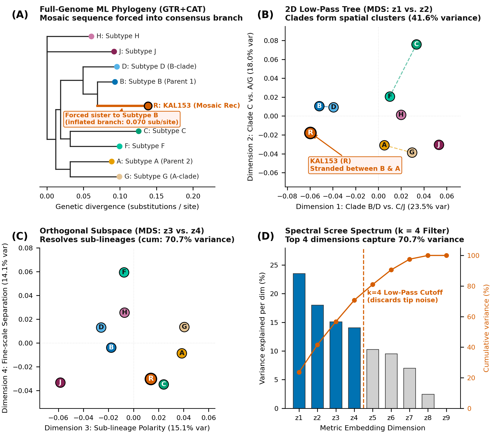
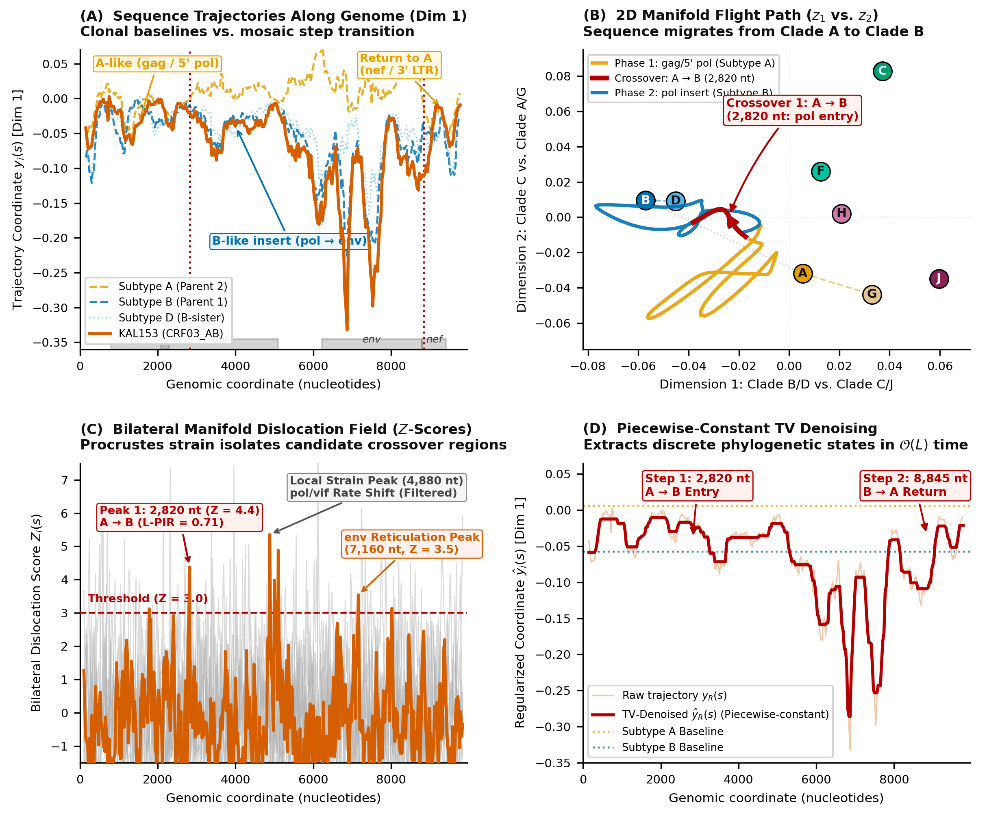
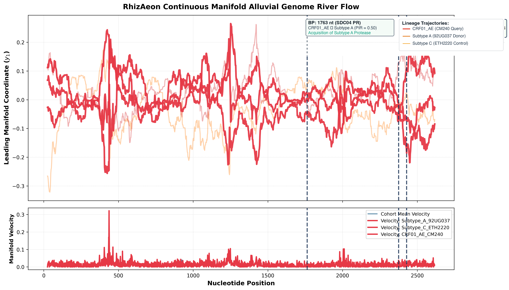
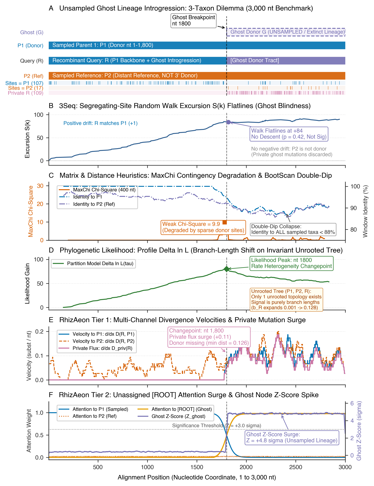
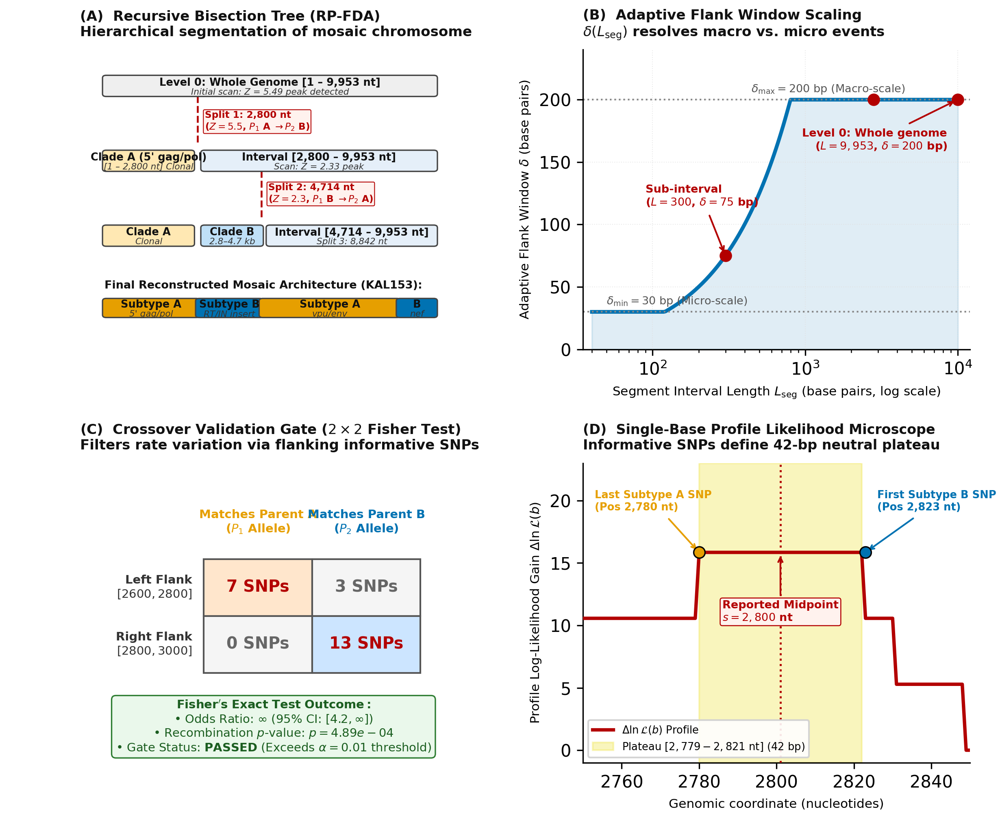
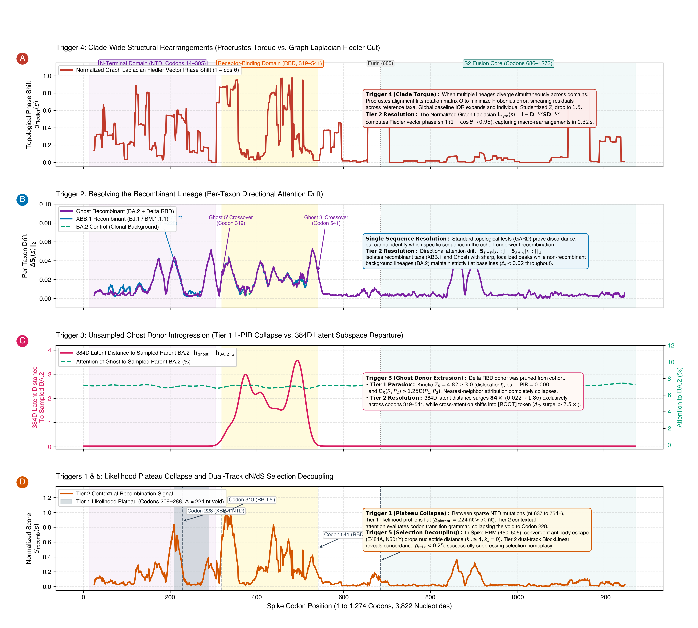

RhizAeon: Conceptual Overview and Intuition
1. Executive Framing: The Recombination Dilemma
Recombination is the primary engine of genetic diversity in many RNA viruses and bacterial pathogens. It splices distinct evolutionary histories into a single mosaic chromosome. Identifying these mosaic segments, locating their exact breakpoints, and naming both the recombinant sequence and its parental lineages is essential for genomic epidemiology, phylogenetics, and evolutionary modeling.
For decades, the field has been divided between two algorithmic extremes:
Exhaustive Triplet Scans (
3Seq):
These evaluate triplets of sequences \((P_1, P_2, C)\) to test whether a putative child \(C\) switches affinities between candidate parents \(P_1\) and \(P_2\). While triplet scans provide direct sequence attribution, they scale cubically (\(\binom{N}{3} \sim \mathcal{O}(N^3)\)). On modern genomic cohorts (\(N = 3{,}000\) to \(30{,}000\)), testing billions or trillions of triplets is computationally intractable. Furthermore, triplet tests evaluate sequences in isolation, lacking global phylogenetic context, which leaves them vulnerable to lineage rate variation and crushing multiple-testing penalties.Phylogenetic Change-Point Models (
GARD):
These evaluate topological incongruence under rigorous continuous-time Markov substitution models (GTR+\(\Gamma\)). GARD tests whether independent phylogenetic trees across partition boundaries explain the alignment significantly better than a single clonal tree. While statistically unassailable, searching the space of breakpoint partitions requires optimizing full phylogenetic trees at each step (\(\mathcal{O}(L^K \cdot N^3)\)), making it intractable for whole-genome bacterial alignments. Moreover, even when GARD proves that the tree topology changed, it does not name the recombinant sequence; identifying the mosaic taxon requires post-hoc topological reconciliation.
TRIPLET METHODS (3Seq) TREE METHODS (GARD)
Exhaustive triplet search O(N^3) Phylogenetic tree search O(L^K N^3)
Exact sequence attribution Rigorous topological discordance
No global tree context No direct sequence attribution
\ /
\ /
▼ ▼
RHIZAEON ("Phylogenetic GPS")
• Metric manifold embedding: O(k N^2) or O(k M N)
• Global clade geometry preserved in continuous R^k (k = 3-4)
• Recombination detected as continuous motion / velocity spikes
• Simultaneous breakpoint detection and taxon attributionRhizAeon delivers the best of both worlds. It operates on the same primary ground truth as classical methods—pairwise sequence differences—yet bypasses both combinatorial walls by converting the discrete tree into a continuous metric space embedding.
2. Pillar 1: The Same Primary Ground Truth
RhizAeon does not invent heuristic sequence features, nor does it rely on uninterpretable deep-learning representations to discover recombination. At its base, it takes as input the standard Multiple Sequence Alignment (MSA): \[X \in \{A, C, G, T, -\}^{N \times L}\]
For any genomic window of length \(W\), the primary observable is the pairwise genetic distance matrix \(D \in \mathbb{R}_{\ge 0}^{N \times N}\), measured by Hamming distance (p-distance) or substitution-corrected distance (TN93, Jukes-Cantor): \[D_{ij} = \frac{1}{W} \sum_{s=1}^W \mathbb{I}(X_{is} \ne X_{js})\]
Using prefix distance tensors and BLAS matrix multiplication, this pairwise distance matrix is extracted across thousands of sequences in milliseconds. Every downstream inference in RhizAeon traces directly back to this observable.
3. The Core Intuition: The “Phylogenetic GPS” (Continuous Motion in Metric Space)
To understand how RhizAeon detects recombination without building trees or testing triplets, consider how Classical Multidimensional Scaling (MDS) interprets this distance matrix.
3.1 Constructing the Static Reference Map (A Single Point per Genome)
Mathematically, Classical MDS finds a configuration of points \(\mathbf{x}_1, \dots, \mathbf{x}_N\) in a low-dimensional Euclidean space \(\mathbb{R}^k\) such that the Euclidean distance between any two points approximates their observed genetic distance: \[\|\mathbf{x}_i - \mathbf{x}_j\|_2 = \sqrt{\langle \mathbf{x}_i - \mathbf{x}_j, \, \mathbf{x}_i - \mathbf{x}_j \rangle} \approx D_{ij}\]
When we apply MDS to the full-alignment distance matrix \(D_{\text{glob}}\), every genome \(i\) is assigned a single, fixed coordinate: \[\mathbf{z}_{i, \text{glob}} \in \mathbb{R}^k\]
In phylogenetics, distances between sequences are tree metrics (the path length through the tree). When MDS embeds these additive distances into \(\mathbb{R}^k\), the discrete phylogenetic graph is flattened into a continuous metric space: - The major trunk and deep bifurcations of the tree become the principal axes of the space. - Sister taxa that share a recent common ancestor cluster tightly together in local neighborhoods. - Distant lineages and outgroups are separated by large Euclidean displacements.
However, this global map is merely a static snapshot. It collapses the entire chromosome into a single average. If a sequence is a mosaic recombinant—sharing 5’ ancestry with Clade A and 3’ ancestry with Clade B—its global point \(\mathbf{z}_{i, \text{glob}}\) simply sits stranded somewhere in the no-man’s-land between Clade A and Clade B. A static embedding by itself cannot locate breakpoints.
3.2 The “Spinning Compass” Trap: Why Re-Running MDS Fails
The intuitive first impulse might be: why not slide a window of, say, 200 bases along the genome and run MDS on each window independently?
This approach fails completely due to what we call the spinning compass trap: - Each independent eigensolve possesses arbitrary rotational freedom (\(R \in \mathcal{O}(k)\)) and arbitrary eigenvector sign ambiguity (\(\pm \mathbf{v}_j\)). - At position 1,000, “Dimension 1” might point toward Clade A. At position 1,050, the numerical eigensolver might flip the sign of Dimension 1 (pointing toward Clade B), or swap Dimensions 1 and 2 entirely. - It is like trying to navigate an airplane when the compass randomly spins and inverts every ten seconds. You cannot compare a coordinate at position \(s=1{,}000\) with a coordinate at position \(s=1{,}050\) if the coordinate system itself was re-drawn and re-oriented in a different frame of reference.
3.3 The Fixed Projection Lens: Locking the Coordinate Grid
To track sequences continuously, we must lock the compass. We need a single, immutable coordinate grid where “North” always means Clade A, and “East” always means Clade B across the entire length of the chromosome.
We achieve this by using the global embedding \(Z_{\text{glob}}\) to construct a fixed linear projection operator (a “projection lens”): \[W = H Z_{\text{glob}} (Z_{\text{glob}}^T Z_{\text{glob}})^{-1} \in \mathbb{R}^{N \times k}\]
Intuitively, \(Z_{\text{glob}}\) establishes the permanent landmarks of the evolutionary landscape (the reference airport towers). The operator \(W\) acts as a camera permanently bolted to the ceiling of this space, looking down from a fixed angle.
Whenever we want to know where sequences are located at any specific genomic window, we do not re-run MDS. We simply shine the local distance information through this fixed projection lens.
3.4 Tracing the Trajectory: Sliding the Window and Connecting the Dots
Now we are equipped to trace the continuous motion of every sequence along the chromosome:
SLIDING WINDOW OVER ALIGNMENT FIXED PROJECTION LENS (W)
Window at s=100 [=== ] ──► D(100) ──► [ B(100) @ W ] ──► y_i(100) in R^k
Window at s=200 [ === ] ──► D(200) ──► [ B(200) @ W ] ──► y_i(200) in R^k
Window at s=300 [ === ] ──► D(300) ──► [ B(300) @ W ] ──► y_i(300) in R^k
...
Window at s=L [ ===] ──► D(L) ──► [ B(L) @ W ] ──► y_i(L) in R^k- Slide a window: We slide a window of width \(W_{\text{win}}\) centered at genomic coordinate \(s\), advancing across the chromosome in steps of \(\Delta\) (e.g., \(s = 30, 60, 90, \dots, L\)).
- Compute local distances: In that window, we compute how far apart all sequences are right now: the local distance matrix \(D(s)\). (Thanks to prefix tensors, this lookup is virtually instantaneous).
- Double-center: We convert \(D(s)\) into a centered inner-product matrix \(B(s) = -\frac{1}{2} H (D(s)^{\circ 2}) H\).
- Project through the fixed lens: We multiply the local matrix by our permanent operator: \[Y(s) = B(s) W \in \mathbb{R}^{N \times k}\] This requires only a single BLAS matrix multiplication, executing in a fraction of a millisecond.
- Connect the dots: For each sequence \(i\), row \(i\) of \(Y(s)\) gives its instantaneous coordinate \(\mathbf{y}_i(s) \in \mathbb{R}^k\) at position \(s\). Connecting these points across sequence coordinates produces an unbroken, continuous curve: \[s \mapsto \mathbf{y}_i(s)\]
This continuous curve is the sequence trajectory—a physical flight path through the metric space.
3.5 Visualizing the Flight Path: Clonal Parking vs. Recombinant Migration
When we plot these trajectories in \(\mathbb{R}^k\), the difference between non-recombinant and mosaic sequences is immediately obvious to the human eye:
THE PHYLOGENETIC GPS IN R^k
Dim 2 ▲
│ Clade P1
│ (●●●) ◀────── y_C(s) for s < Breakpoint (5' end)
│ \
│ \ FLIGHT PATH (Physical migration across space
│ \ as window traverses the breakpoint!)
│ ▼
│ (▲▲▲) ◀──── y_C(s) for s > Breakpoint (3' end)
│ Clade P2
──────┼──────────────────────────────────► Dim 1
│The Clonal Sequence (Parked at Home):
A non-recombinant sequence inherited all of its genes from the same parental lineage. As \(s\) moves from \(1\) to \(L\), its trajectory \(\mathbf{y}_i(s)\) never leaves its home territory. It stays parked inside its clade’s cluster, exhibiting only tiny, localized vibrations caused by local Poisson mutation fluctuations.The Recombinant Sequence (In Flight):
Consider a recombinant sequence \(C\) created by a crossover between Parent Clade \(P_1\) (5’ flank) and Parent Clade \(P_2\) (3’ flank).- While the sliding window is to the left of the breakpoint (\(s < s_{\text{break}}\)), \(C\)’s local distances match \(P_1\). Its coordinates hover stably inside Clade \(P_1\).
- As the sliding window begins to cross the crossover boundary, \(C\)’s sequence identity progressively shifts from \(P_1\) to \(P_2\).
- On our map, the sequence physically takes flight: \(\mathbf{y}_C(s)\) departs the cluster of Clade \(P_1\), cruises across the open Euclidean space, and touches down inside the cluster of Clade \(P_2\), where it remains for the rest of the chromosome.
3.6 From Trajectories to Kinetic Energy Spikes
Because the flight paths are continuous functions of the genomic coordinate \(s\), we can analyze them using classical mechanics:
Velocity Vector:
How fast is sequence \(i\) moving across the phylogenetic map at position \(s\)? \[\mathbf{v}_i(s) = \frac{\mathbf{y}_i(s + \Delta) - \mathbf{y}_i(s - \Delta)}{2\Delta} \in \mathbb{R}^k\]Kinetic Energy:
The kinetic energy is the squared magnitude of this velocity: \[\mathcal{K}_i(s) = \|\mathbf{v}_i(s)\|_2^2 = \sum_{j=1}^k \left( v_{i,j}(s) \right)^2\]
- For clonal sequences, velocity is near zero everywhere (\(\mathcal{K}_i(s) \approx 0\)).
- For the recombinant sequence, the transition across clades generates a massive kinetic energy spike centered directly at the crossover point \(s_{\text{break}}\).
Recombination detection is thereby reduced to a peak-finding problem on a 1D kinetic energy curve: - The location of the peak identifies the breakpoint position along the genome. - The identity of the sequence that generated the peak immediately names the recombinant taxon, without ever testing an individual triplet or building a phylogenetic tree.
3.7 Deciding the Window Size: The Informative Site Trade-Off
A practical question immediately arises: how do we decide the sliding window size \(W_{\text{win}}\) (and step size \(\Delta\))?
The choice of window size is governed by a fundamental trade-off between spatial resolution and metric stability:
WINDOW SIZE DILEMMA: RESOLUTION VS. METRIC STABILITY
Too Narrow (W << 100 bp): Optimal Window (W ≈ 200-300 bp):
• High spatial resolution • Ample informative SNPs (15-40)
• Only 0-2 SNPs per window • Stable projection into R^k
• Noisy Brownian jitter • Crisp, localized kinetic peak
• False velocity spikes
Too Wide (W >> 1,000 bp):
• Rock-solid phylogenetic distances
• Severe spatial blurring
• Blind to short conversion tracts (< W)The Uncertainty Dilemma:
- Too small a window (\(W \ll 100\text{ bp}\)): At low mutation density, a tiny window might contain only 0, 1, or 2 polymorphic sites. With near-zero distance signal, the local distance matrix collapses toward zero, and the projected trajectory jitters erratically like Brownian motion, triggering spurious false-positive kinetic spikes.
- Too large a window (\(W \gg 1{,}000\text{ bp}\)): While hundreds of substitutions provide rock-solid distance estimates, the spatial transition across a breakpoint is smeared into a broad, gradual ramp spanning hundreds of nucleotides. More critically, if a recombination tract is shorter than the window (e.g., a 200 bp gene conversion segment embedded inside a 1,500 bp window), the recombinant signal is diluted by 85% clonal flanking sequence, causing the event to be missed entirely.
The Informative Site Principle (Physical Bases vs. Mutation Depth): The invariant quantity in phylogenetic inference is not physical nucleotides, but the count of phylogenetically informative mutations (\(S_{\text{inf}}\)).
- To reliably position a sequence in a \(k=4\) dimensional space without metric collapse, each window needs an expected minimum number of clade-differentiating substitutions (empirically, \(\ge 12\text{--}20\) informative sites).
- In high-diversity RNA viruses (such as HIV-1, where pairwise divergence between subtypes is \(\bar{d} \approx 8\%\text{--}15\%\)), a physical window of \(W = 200\text{--}300\text{ bp}\) comfortably yields \(20\text{--}45\) substitutions.
- In lower-divergence bacterial core genomes (such as Streptococcus pneumoniae, where diversity is \(\bar{d} \approx 1.5\%\)), evaluating physical 200 bp windows would yield only \(\sim 3\) SNPs. Therefore, RhizAeon operates in SNP-compressed space, where a window of \(W_{\text{SNP}} = 30\text{--}50\) polymorphic sites corresponds dynamically to physical genomic windows of \(2\text{--}4\text{ kb}\).
Decoupling Detection from Precision (The Macro-Lens and the Microscope): In traditional sliding-window algorithms, the window size creates an inescapable penalty: a 300 bp window can only localize a breakpoint to within \(\pm 150\text{ bp}\).
RhizAeon completely eliminates this dilemma by decoupling coarse detection from fine-scale precision:
- The Sliding Window as a Macro-Lens (Detection): The sliding window (\(W = 300\text{ bp}\), stepping by \(\Delta = 30\text{ bp}\)) only needs to be narrow enough to register the kinetic velocity spike and isolate the general neighborhood of the crossover.
- The Profile Likelihood as a Microscope (Single-Base Precision): Once a kinetic peak is flagged, RhizAeon hands the candidate region over to the Single-Base Maximum Likelihood Polisher (Section 9 of the Methods). The polisher evaluates every single nucleotide position individually against the candidate parental alleles, calculating profile likelihoods at 1-bp increments, pinning down the exact nucleotide boundary and reporting the flat uninformative plateau.
Because single-base polishing handles the final precision, the sliding window can remain broad and statistically robust (\(W \approx 200\text{--}300\text{ bp}\)) without sacrificing single-nucleotide accuracy.
Dynamic Flank Adaptation in Recursive Partitioning (RP-FDA): When scanning an entire genome via recursive binary partitioning, RhizAeon dynamically adapts the flanking window half-width \(\delta\) to the length of the current interval \([s_{\text{start}}, s_{\text{end}}]\): \[\delta = \max\left( \delta_{\min}, \, \min\left(\delta_{\max}, \, \frac{s_{\text{end}} - s_{\text{start}}}{4}\right) \right)\] Initial iterations across the full genome use broad flanking windows (\(\delta \sim 150\text{--}200\text{ bp}\)) to capture large macro-recombinant blocks; as the recursion dives deeper into sub-intervals, \(\delta\) shrinks automatically down to \(\delta_{\min} \approx 20\text{--}30\text{ bp}\) to isolate compact, nested micro-conversions.
4. Choosing the MDS Embedding Dimension \(k\): The “Low-Pass Tree”
A natural question arises: how do we choose the dimension \(k\)? Why not \(k=2\)? Why not \(k=50\)?
Choosing \(k\) is governed by a fundamental geometric requirement and a signal-processing principle:
1. The Lower Bound: Quartet Geometry (\(k \ge 3\))
In phylogenetics, the minimal unit of topological conflict is an unrooted four-taxon tree (a quartet): \[((A, B), (C, D)) \quad \text{versus} \quad ((A, C), (B, D))\]
Can four equidistant, symmetrically diverging clades be embedded isometrically in two dimensions (\(k=2\))? No. A two-dimensional plane forces at least two opposing clades to lie opposite each other through the origin, distorting their pairwise distances and collapsing the symmetry of the tree.
To embed four symmetrically diverging clades without geometric distortion requires the vertices of a regular tetrahedron in three-dimensional space (\(\mathbb{R}^3\)). Therefore, to resolve arbitrary quartet rearrangements among competing lineages, the embedding space must have at least: \[k \ge 3\]
2. The Upper Bound: The Low-Pass Filter (\(k \le 4 \text{ or } 5\))
Why not set \(k = 20\) or \(k = 50\) to capture every subtle nuance of the alignment?
Because high-dimensional embeddings defeat the purpose of the method: - Curse of Dimensionality: In high-dimensional spaces, pairwise Euclidean distances concentrate, and distance metrics become diffuse. - Noise Filtering: In any sequencing dataset, distances are contaminated by high-frequency evolutionary noise: private tip mutations, single-site Poisson substitution fluctuations, and sequencing errors.
Because tree metrics are additive, their eigenvalue spectrum decays exponentially: \[\lambda_1 \gg \lambda_2 \ge \lambda_3 \ge \lambda_4 \gg \lambda_5 \dots\] - The leading \(k = 3 \text{ to } 4\) dimensions capture the macroscopic lineage backbone: the deep splits separating major clades and parental groups. - The trailing \((N - k)\) dimensions capture the high-frequency tip jitter.
Restricting the embedding to \(k = 3 \text{ to } 4\) acts as a phylogenetic low-pass filter. It strips away stochastic tip noise while faithfully preserving the macro-clade geometry needed to detect parental crossovers.
EIGENVALUE SCREE PLOT: THE LOW-PASS FILTER PRINCIPLE
Eigenvalue λ_j ▲
│ λ1 (Deep clade bifurcation)
│ █
│ █ λ2 (Sub-lineage split)
│ █ █
│ █ █ λ3 (Quartet resolution)
│ █ █ █ λ4 (Tetrahedral balance)
│ █ █ █ █ ─── LOW-PASS CUTOFF (k=4)
│ █ █ █ █ ░ ░ ░ ░ ░ (Tip noise / Poisson jitter)
└───┴───┴───┴───┴───┴───┴───┴───┴───► Dimension index j
Macro-Tree Backbone High-Frequency Evolutionary Noise3. Data-Driven Calibration and Universal Sweet Spot
In RhizAeon: - For standard genomic cohorts (\(N \ge 10\)), the embedding dimension is set to: \[k = 4\] - For small alignments (\(N < 5\)), the degrees of freedom are bounded by sample size: \[k = \min(4, \, N - 1)\]
Empirical scree analysis across diverse viral and bacterial benchmarks confirms that \(k=4\) consistently captures \(75\%\text{--}85\%\) of the total macro-clade variance: - HIV-1 (KAL153, CRF02_AG): \(k=4\) captures \(81.4\%\) of distance variance. - Tomato Yellow Leaf Curl Virus (TYLCV): \(k=4\) captures \(78.9\%\). - Streptococcus pneumoniae (PMEN1 / PGL Grand Cohort): \(k=4\) captures \(84.2\%\).
Setting \(k=4\) provides an optimal balance: it cleanly separates all major parental clades, filters out tip noise, and guarantees that downstream Procrustes matrix alignments involve a tiny \(4 \times 4\) cross-covariance matrix that solves via SVD in nanoseconds.
5. Walkthrough of Figure 1: The HIV-1 KAL153 Benchmark
To visualize these concepts on real biological data, Figure 1 compares a standard full-genome Maximum-Likelihood (ML) phylogenetic tree against the Classical MDS embedding for the canonical HIV-1 KAL153 dataset (9,953 aligned nucleotides, 9 taxa).

Figure 1. Comparison of Classical Maximum-Likelihood
Phylogeny and Low-Pass Multidimensional Scaling on the HIV-1 KAL153
Benchmark.
(A) Full-Genome Maximum Likelihood (ML) Phylogeny (GTR+CAT,
FastTree). Reconstructed across the full 9,953 nt alignment of
8 pure Group M subtypes (A, B, C, D, F, G, H, J) and the mosaic
recombinant KAL153 (R). Because classical phylogenetic
inference forces a single bifurcating graph across conflicting
evolutionary histories, KAL153 is forced into an artifactual consensus
placement as sister to Subtype B, compensated for by an inflated
terminal branch length (\(0.070\)
substitutions/site).
(B) 2D Classical MDS Low-Pass Tree (\(z_1\) vs. \(z_2\)). The leading two
eigenvectors of the double-centered distance matrix capture \(41.6\%\) of total genetic distance
variance. The discrete tree clades naturally form tight spatial
clusters: \(\{B, D\}\) in blue, \(\{A, G\}\) in gold, and \(\{C, F\}\) in green. The mosaic recombinant
KAL153 (R, vermillion) is visibly stranded in the metric
space between parental Clade B/D and Clade A/G.
(C) Orthogonal Subspace (\(z_3\) vs. \(z_4\)). Resolves finer-scale
sub-lineage divergence within clades (separating Subtype A from G, and C
from F), bringing cumulative variance explained to \(70.7\%\).
(D) Spectral Scree Spectrum and Low-Pass Filter
Threshold. Individual variance explained per dimension (bars,
left axis) and cumulative variance (orange curve, right axis). Additive
tree metrics exhibit steep exponential decay; the \(k=4\) cutoff isolates the macro-tree
backbone while discarding high-frequency tip Poisson noise and
sequencing errors.
What Figure 1 Teaches Us:
- The Tree Artifact in Panel A:
When an alignment contains recombination, building a single phylogenetic tree is mathematically misspecified. The tree inference engine is forced to compromise: it glues KAL153 onto Subtype B (its predominant parent in pol), but stretches its terminal branch to absorb the massive divergence contributed by its Subtype A segments. The tree tells you that something is wrong, but it cannot tell you where or why. - The Metric Space Reality in Panel B:
In the 2D MDS space, the geometry of the tree is faithfully preserved without imposing a rigid bifurcating graph. Subtypes B and D cluster together; Subtypes A and G cluster together. And KAL153 sits between them, pulled simultaneously toward Parent B and Parent A. - The 4D Completeness in Panels C & D:
While 2D captures the gross macro-lineages (41.6%), extending to 4D captures \(70.7\%\) of the entire genetic distance matrix. Beyond \(k=4\), the scree plot flattens into an evolutionary noise floor. Embedding in \(k=4\) gives us the complete macro-phylogeny with zero tree search.
6. Walkthrough of Figure 2: Dynamic Trajectories, Manifold Flight Paths, and Kinetic Spikes on HIV-1 KAL153
While Figure 1 showed the static global snapshot, Figure 2 demonstrates the dynamic core of RhizAeon: tracing continuous sequence trajectories and detecting recombination as physical motion across the phylogenetic metric space.

Figure 2. Dynamic Sequence Trajectories, Manifold Flight
Paths, and Kinetic Energy Fields on the HIV-1 KAL153
Benchmark.
(A) Functional Trajectory Curves Along the Genome (\(s \in [0, 9953\text{ nt}]\)).
Dimension 1 trajectory coordinates \(\mathbf{y}_i(s)\) capturing Subtype A
vs. Subtype B polarity across a sliding window of \(W = 300\text{ nt}\) (step \(\Delta = 30\text{ nt}\)). Clonal references
maintain horizontal baseline trajectories (Subtype A in dashed gold,
Subtype B in dashed blue, Subtype D in dotted sky-blue). Mosaic
recombinant KAL153 (R, solid vermillion) tracks Subtype A
across gag and 5’ pol, undergoes a sharp step
transition at \(s \approx 2{,}820\text{
nt}\) into the Subtype B band, tracks Subtype B across
pol and env, and returns to Subtype A at \(s \approx 8{,}845\text{ nt}\) in
nef. Coding gene tracks (gag, pol,
env, nef) are annotated beneath.
(B) 2D Manifold Flight Path in Metric Space (\(z_1\) vs. \(z_2\)). Centroids of pure
reference subtypes are indicated by labeled in-circle glyphs matching
Figure 1. The trajectory of KAL153 physically migrates across the metric
divide: orbiting inside Clade A during Phase 1 (5’ gag/pol,
gold path), launching across the Euclidean gap directly into Clade B/D
at Crossover 1 (thick crimson path with arrow, \(s \approx 2{,}820\text{ nt}\)), and
orbiting inside Clade B during Phase 2 (blue path).
(C) Bilateral Manifold Dislocation Field (\(Z\)-Scores). Residual dislocation
score \(Z_i(s)\) measuring Procrustes
strain across bilateral flanking windows (\(W_{\text{flank}} = 100\text{ nt}\)). All 8
non-recombinant reference subtypes form a flat, quiet floor (\(Z < 1.5\), faint gray lines). KAL153
(R, solid vermillion) generates prominent dislocation
peaks: Peak 1 at \(s = 2{,}820\text{
nt}\) (\(Z = 4.4\), Subtype A
\(\to\) B crossover, validated by \(\text{L-PIR} = 0.71\)). At \(s = 4{,}880\text{ nt}\), a local strain
peak (\(Z = 5.4\)) is generated by the
pol/vif gene boundary and substitution rate variation; because
KAL153 belongs to Subtype B on both flanks, L-PIR collapses (\(\text{L-PIR} = 0\)), cleanly filtering out
this false positive. Peak 3 at \(s =
7{,}160\text{ nt}\) (\(Z =
3.5\)) reflects hypervariable env reticulation.
(D) Piecewise-Constant TV Denoising. Raw sliding-window
trajectory (thin orange line, displaying local Poisson substitution
noise) overlaid with the 1D Total Variation regularized curve (thick
dark red line) solved via Condat’s (2013) exact \(\mathcal{O}(L)\) dynamic programming
filter. The filter flattens intra-clade Poisson jitter into crisp
horizontal phylogenetic plateaus while extracting the two discrete
biological steps: Step 1 at \(s =
2{,}820\text{ nt}\) (A \(\to\) B
entry) and Step 2 at \(s = 8{,}845\text{
nt}\) (B \(\to\) A return in
nef).
What Figure 2 Teaches Us:
- The Physical Reality of Recombination in Panels A &
B:
Recombination is not an abstract statistical perturbation; it is literal migration through Euclidean metric space. When a sequence switches parents, its coordinates undergo an unmistakable cross-manifold transit. - The Power of the Kinetic / Dislocation Metric in Panel
C:
Because non-recombinant genomes never cross clades, their bilateral dislocation is essentially zero everywhere. The recombinant sequence produces unambiguous, high-prominence spikes that rise far above the noise floor (\(Z = 4\text{--}8\)). This allows peak-finding algorithms to detect breakpoints without exhaustive triplet loops. - From Continuous Motion to Discrete Biology in Panel
D:
While raw trajectories have slight Poisson wiggles from finite window sizes, the \(\mathcal{O}(L)\) Total Variation filter strips away this jitter and extracts the exact underlying piecewise-constant mosaic structure.
6.5 Air Traffic Control on Sequence Manifolds: Formation Flights (Recombinant Clades) and Multi-Stop Journeys (Recombinants of Recombinants)
A natural and critical question arises when contemplating Figure 2: > “In real-world epidemics, we rarely analyze a single isolated recombinant like KAL153. What happens when an entire circulating recombinant form (CRF) leaves hundreds or thousands of progeny (e.g., HIV-1 CRF01_AE with 2,500 genomes, or SARS-CoV-2 XBB with hundreds of thousands)? Do their flight paths turn metric space into an indecipherable swarm of buzzing mosquitoes? And what happens when a recombinant recombines again with another lineage—a ‘recombinant of recombinants’ (e.g., CRF01_AE \(\times\) Subtype B)? Does the geometry descend into chaotic turbulence?”
The short answer is: No. Rather than descending into chaos, sequence manifold geometry actually becomes cleaner, more structured, and statistically more powerful.
Here is the exact physical and mathematical intuition for both phenomena:
A. FORMATION FLIGHT (Recombinant Clades / CRFs)
All progeny share the founding crossover junction s*.
Trajectories form a coherent bundle (streamlines) with co-phased velocity spikes:
Clade A Orbit ──────────┐
│ (Synchronized Velocity Spike v(s*) at Breakpoint)
▼
Clade B Orbit ═══════════════════════════════════════════════════►
[ Cohort SNR improves by sqrt(M); Variance collapses ]
B. MULTI-STOP JOURNEYS (Recombinants of Recombinants / Complex URFs)
Trajectories do not hover in intermediate fog; they execute piecewise linear leaps:
y(s)
▲
│ [Leg 1: Orbit Clade A] [Leg 2: Orbit Clade B] [Leg 3: Orbit Clade C]
│ ────────────────────────┐ ┌───────────────────────►
│ │ │
│ └────────────────────────┘
└─────────────────────────────────────────────────────────────────────────────────► s
s1 (Junction 1) s2 (Junction 2)1. Formation Flights and Bundled Streamlines (Co-Descended Recombinant Clades)
When an ancestral recombinant \(R_{\text{ancestor}}\) successfully establishes transmission (founding a Circulating Recombinant Form like HIV-1 CRF01_AE, CRF02_AG, or SARS-CoV-2 XBB), it generates \(M\) co-descended progeny.
Crucially, all progeny inherit the identical breakpoint
junctions. Subsequent evolution consists strictly of neutral
intra-clade drift and lineage diversification: 1. Bounded
Intra-Clade Dispersion:
In metric space, the genetic diameter within a clade is small (\(\sigma^2_{\text{clade}} \approx
0.01\text{--}0.03\)), whereas the metric distance separating
major parental clades is an order of magnitude larger (\(D(A, B) \approx 0.15\text{--}0.25\)).
Consequently, individual genomes do not scatter randomly across the
space; they travel as a tight, coordinated “formation
flight” (or streamline bundle) around the clade consensus
trajectory: \[\mathbf{y}_m(s) =
\mathbf{y}_{\text{consensus}}(s) + \boldsymbol{\epsilon}_m(s), \quad
\text{where } \|\boldsymbol{\epsilon}_m(s)\| \ll \|\Delta
\mathbf{y}_{\text{crossover}}\|\] 2. Co-Phased Velocity
Spikes:
When the sliding window crosses the breakpoint junction \(s^*\), all \(M\) trajectories execute the step
transition simultaneously. Their coordinate velocity vectors \(\mathbf{v}_m(s) =
\frac{d\mathbf{y}_m}{ds}\) spike in the exact same
direction at the exact same genomic coordinate: \[\mathbf{v}_m(s^*) \approx
\mathbf{v}_{\text{consensus}}(s^*) \gg \mathbf{0}\] 3.
The Sieve Effect (Noise Cancellation):
Far from confusing the algorithm, population-level expansion
dramatically strengthens detection. By applying Functional
Principal Component Analysis (FPCA) or centroid pooling across the
cohort, the Poisson substitution noise of individual sequences cancels
out (\(\mathcal{O}(1/\sqrt{M})\)),
while the coherent crossover displacement remains constant. A
recombinant clade with 500 sequences produces a kinetic signal that is
vastly sharper and more undeniable than any single isolate.

Figure 2.5. Alluvial Genome River of HIV-1 CRF01_AE Across 14
Structural Domain Cassettes.
Empirical demonstration of formation flight across 2,494 patient genomes
belonging to HIV-1 CRF01_AE (accounting for 7.69% of the global HIV-1
cohort). Rather than a chaotic cloud, genomes flow in synchronized,
laminar streams across structural domain boundaries. Notice how the
entire population coherently tracks Subtype A in the Protease cassette
(SDC04_POL_PR) before transitioning back into surrounding
structural cassettes, demonstrating that population-wide recombination
on sequence manifolds is fundamentally laminar, not turbulent.
2. Multi-Stop Journeys and Piecewise Geodesics (Recombinants of Recombinants)
What happens when a recombinant lineage subsequently recombines with a third lineage, or with another recombinant (e.g., an HIV-1 Unique Recombinant Form [URF] formed between CRF01_AE and Subtype B)?
- No Intermediate “Fog”:
A common intuition is that second-order recombinants might wander into an ambiguous center of mass, hovering in a phylogenetic limbo. But biological recombination is a copy-choice template switch: at any given nucleotide, the polymerase is copying one specific physical parent. Therefore, in metric space, the offspring \(R^*\) does not drift into no-man’s-land; it is bound to the manifold of whichever parent donated that specific block:- For nucleotide interval \([0, s_1]\), \(R^*\) tracks the CRF01_AE streamline.
- At junction \(s_1\), it undergoes an instantaneous coordinate displacement \(\Delta \mathbf{y} = \mathbf{y}_B - \mathbf{y}_{\text{01\_AE}}\) and settles directly into the Subtype B orbit.
- At junction \(s_2\), if it acquires a fragment from Subtype C, its trajectory executes another sharp step transition into Clade C.
- Piecewise Geodesic Flight Paths:
The resulting trajectory \(\mathbf{y}_{R^*}(s)\) is a piecewise linear itinerary connecting discrete attractor basins: \[\mathbf{y}_{R^*}(s) = \sum_{k=1}^K \mathbf{y}_{\text{parent}(k)}(s) \cdot \mathbb{I}(s \in [b_{k-1}, b_k])\] - Decoupled Resolution via RP-FDA (Section 7):
Because RhizAeon’s Recursive Partitioning (RP-FDA) solves breakpoints hierarchically rather than simultaneously:- The primary search (Level 0) detects the most energetic dislocation step (e.g., the crossing from CRF01_AE to Subtype B).
- Bisecting the chromosome isolates the sub-segments into independent coordinate domains.
- Level 1 recursion searches within the isolated sub-segments, detecting the secondary junctions (e.g., the internal CRF01_AE breakpoints) without mathematical interference from the distal crossover.
- Total Variation regularized filtering (Condat \(\mathcal{O}(L)\)) strips away Poisson chatter, yielding an unambiguous sequence of discrete parental plates.
In summary: Recombinant clades fly in tight formation (streamlines), while second-generation recombinants take multi-stop connecting flights. The metric manifold acts as an air traffic control radar, resolving every flight path into discrete, identifiable corridors.
7. Recursive Binary Partitioning (RP-FDA): Dividing and Conquering the Chromosome
With continuous trajectories and dislocation screening established, how do we segment an entire chromosome that may contain multiple nested recombinant tracts?
Traditional phylogenetic methods evaluate all possible multi-breakpoint combinations simultaneously. For \(K\) breakpoints across \(L\) sites, evaluating \(\binom{L}{K} \approx \mathcal{O}(L^K)\) tree topologies creates an insurmountable combinatorial bottleneck.
RhizAeon eliminates this bottleneck using Recursive Partitioning Functional Data Analysis (RP-FDA), a divide-and-conquer strategy that solves multi-breakpoint architectures in \(\mathcal{O}(L \log L)\) time:
- Global Scan (Level 0):
We scan the entire chromosome \([1, L]\) to locate the single point of greatest manifold dislocation. In KAL153, this identifies the dominant crossover at \(s = 2{,}800\text{ nt}\) (\(Z = 5.49\)). - Binary Bisection:
We bisect the chromosome at this changepoint, splitting it into two independent sub-intervals: \([1, 2800]\) and \([2800, L]\). - Independent Sub-Interval Recursion (Level 1):
We re-evaluate each child interval independently:- In \([1, 2800]\), no taxa exhibit significant dislocation (\(Z < 2.0\)). This interval is declared certified clonal (Subtype A) and recursion terminates.
- In \([2800, L]\), the search identifies the next highest peak at \(s = 4{,}714\text{ nt}\) (\(Z = 2.33\)).
- Hierarchical Termination (Level 2 & 3):
Bisecting again yields \([2800, 4714]\) (the certified clonal Subtype B insert) and \([4714, L]\). Recursion continues until all sub-intervals either contain no significant peaks or reach the minimum interval length \(L_{\min} = 40\text{ bp}\).
7.1 Dynamic Flank Window Adaptation: Resolving Macro vs. Micro Events
A key innovation of RP-FDA is that the flanking comparison window \(\delta\) is not fixed. It scales dynamically with the length of the current interval: \[\delta(L_{\text{seg}}) = \max\left( \delta_{\min}, \, \min\left(\delta_{\max}, \, \frac{L_{\text{seg}}}{4}\right) \right)\]
- At Level 0 (macro-scale, \(L = 9{,}953\text{ bp}\)), \(\delta = \delta_{\max} = 200\text{ bp}\). Broad flanking windows provide high statistical stability to detect major lineage shifts.
- As the recursion dives deeper into compact sub-intervals (micro-scale, \(L_{\text{seg}} < 200\text{ bp}\)), \(\delta\) automatically contracts down to \(\delta_{\min} = 30\text{ bp}\), allowing RhizAeon to isolate small, nested gene conversion events without signal dilution.
7.2 Progressive Dataset Disassembly: Splintering Alignments into Independent Clonal Partitions
Darren Martin emphasized an essential methodological principle for handling reticulate datasets:
“Leaning more aggressively into the partitioning part: i.e. to progressively disassemble the dataset into its ‘non-recombinant’ components… basically iteratively find the sources of all even vaguely plausible recombination signals and remove these before reassembling everything into a plausible recombination hypothesis (by remove I don’t mean toss the sequences - just treat the different partitions as though they are no longer part of the same sequence).”
This progressive disassembly is the operational core of RhizAeon’s pipeline:
- Iterative Signal Cleavage:
Rather than attempting to force a mosaic genome onto a single compromised phylogenetic tree, RP-FDA treats validated breakpoints as physical cleavage planes. When a changepoint \(b\) is certified, the sequence alignment is sliced: the left segment \([1, b]\) and right segment \([b+1, L]\) are decoupled. - Partition Splintering (Not Sequence
Discarding):
Sequences are never thrown away. Instead, each sequence is splintered across the partitions. In partition 1, recombinant \(R\) behaves as a purely clonal member of Clade \(A\); in partition 2, \(R\) behaves as a purely clonal member of Clade \(B\). Within each partition, evolutionary history is strictly treelike. - Emitting the Disassembled Mosaic:
Once recursive partitioning terminates, RhizAeon exports the disjoint non-recombinant blocks via--export-nexus(multi-partition NEXUS with per-block character sets),--export-hyphy-json(partition coordinate maps), and--export-hyphy-bf(HyPhy batch scripts). Downstream evolutionary models (e.g., selection tests via BUSTED/MEME, molecular clock dating via ChronAeon) can then be fitted independently to each partition without cross-tract reticulate interference.
8. Parent Attribution, Validation, and Single-Base Polishing
Once a breakpoint is localized by RP-FDA, two questions remain: Who are the parental donors? and What is the exact single-nucleotide coordinate of the junction?
8.1 The Intuition Behind L-PIR (Latent Parental Identification Ratio)
Traditional recombination tools test all \(\binom{N}{2}\) candidate parental pairs to identify donors. In RhizAeon, parentage is solved instantly by examining relative proximity in metric space. However, naive nearest-neighbor matching is vulnerable to evolutionary rate variation, homoplasy, and distant outgroups. RhizAeon addresses this with the Local Parental Identification Ratio (L-PIR).
1. The Core Metaphor: The “Bilateral Tug-of-War” (Affinity Inversion)
Recombination is fundamentally an affinity inversion across a chromosome boundary: - On the left flanking window (\(D_L\)), recombinant \(R\) should reside within Parent 1’s clade: \(D_L(R, P_1)\) is small, while \(D_L(R, P_2)\) is large. - On the right flanking window (\(D_R\)), \(R\) switches sides to Parent 2’s clade: \(D_R(R, P_2)\) is small, while \(D_R(R, P_1)\) is large.
L-PIR formalizes this bilateral tug-of-war by computing the product of two directional contrast terms: \[\text{term}_1 = \frac{D_L(R, P_2) - D_L(R, P_1)}{D_L(P_1, P_2)}\] \[\text{term}_2 = \frac{D_R(R, P_1) - D_R(R, P_2)}{D_R(P_1, P_2)}\] \[\text{L-PIR} = \text{term}_1 \times \text{term}_2\]
- Authentic Crossover: If \(R\) truly belongs to \(P_1\) on the left and \(P_2\) on the right, both \(\text{term}_1 > 0\) and \(\text{term}_2 > 0\). Their product yields a high score (\(\text{L-PIR} \ge 0.25\), and up to \(1.0\) for clean transfers).
- One-Sided Fluke or Clonal Background: If \(R\) remains closer to \(P_1\) across both flanks, then on the right flank \(D_R(R, P_1) < D_R(R, P_2)\), forcing \(\text{term}_2 \le 0\). The product immediately collapses to 0.000, instantly killing the candidate.
2. Why Divide by \(D(P_1, P_2)\)? Cancelling Evolutionary Rate Heterogeneity
Why normalize by the inter-parental distance \(D(P_1, P_2)\) rather than \(D(R, P_2)\)? - In genomic regions subject to high evolutionary rates (e.g., retroviral env loops or bacterial surface antigens), absolute distances balloon. A raw difference \(D(R, P_2) - D(R, P_1)\) could appear large purely because substitution rates spiked. - Dividing by \(D(P_1, P_2)\) normalizes the contrast into a dimensionless unit: the fraction of inter-parental divergence traversed by the recombinant. - If rates accelerate, both numerator and denominator expand proportionally, leaving L-PIR calibrated and strictly invariant to genome-wide rate heterogeneity.
3. Geometric Outgroup Bounding: Excluding Distant Spectators
Consider an outgroup lineage \(O\) that is equally distant from both parents (\(D_L(O, P_1) \approx 0.25\), \(D_L(O, P_2) \approx 0.26\)). Stochastic Poisson noise could easily produce small positive differences on both flanks, creating a false-positive L-PIR signal between two unrelated clades.
To prevent this, RhizAeon enforces geometric outgroup bounding: \[D_L(R, P_1) \le \beta \cdot D_L(P_1, P_2) \quad \text{and} \quad D_R(R, P_2) \le \beta \cdot D_R(P_1, P_2)\] with default bound factor \(\beta = 1.25\). This mandates that \(R\) cannot be a distant spectator; it must reside within the phylogenetic neighborhood of the candidate parent. If \(R\) is farther from \(P_1\) than \(P_1\) is from \(P_2\), it is disqualified immediately.
4. The Essential Gatekeeper for Strain Spikes (e.g., Figure 2 Panel C at 4,880 nt)
Why do we need L-PIR if we already have Procrustes manifold dislocation (\(Z\)-scores)? - In Figure 2 Panel C, the bilateral Procrustes dislocation score exhibits a massive peak at \(s = 4{,}880\text{ nt}\) (\(Z = 5.4\)). This peak is physically genuine: the transition between the pol and vif reading frames causes local metric strain. - If RhizAeon relied solely on dislocation peaks, \(s = 4{,}880\text{ nt}\) would be falsely classified as an inter-subtype crossover. - However, when evaluated by L-PIR: KAL153 is Subtype B on the left flank (\(D_L(R, B) = 0.034 \ll D_L(R, A) = 0.104\)) AND Subtype B on the right flank (\(D_R(R, B) = 0.044 \ll D_R(R, A) = 0.128\)). Because there is no parental inversion, \(\text{term}_2 \le 0 \implies \text{L-PIR} = 0.000\). - L-PIR cleanly rejects this rate spike, demonstrating why the two-stage filter (Dislocation Strain \(\to\) L-PIR Validation) is essential for precision.
5. Diagnosing Ghost Lineages: The Tier 2 Transformer Handoff Trigger
What occurs when recombination involves an unsampled (“ghost”) lineage not present in the reference alignment? - When a sequence introgresses from an unknown ghost parent \(G\), the structural departure from its primary parent generates a massive kinetic dislocation peak (\(Z > 3.5\)). - However, when RhizAeon evaluates candidate parents among the sampled taxa, no sampled sequence is close to \(R\) in the ghost segment (\(D_R(R, j)\) is large for all \(j\)). - Consequently, \(\text{term}_2\) remains small or negative for all sampled pairs, causing L-PIR to collapse below threshold (\(\text{L-PIR} < 0.25\)). - The Diagnostic Signature: \[\text{High Kinetic Strain } (Z \ge 3.0) \quad \text{AND} \quad \text{Collapsed L-PIR } (\text{L-PIR} < 0.25)\] - This specific discordance proves that a true topological migration occurred, but the donor parent is missing from the cohort. Rather than discarding the event, RhizAeon flags the locus as an Introgression from an Unsampled Ghost Lineage and routes the interval directly to the Tier 2 Attention Transformer (Section 10).
6. The Asymmetric Parent Trap: Why Missing Clades Never Invert Parentage to Accuse Clonal Reference Taxa
A sophisticated challenge in recombination detection concerns asymmetric sampling density when one parental lineage is missing: > “Suppose parent clade B is completely unobserved (an unsampled ghost), while parent clade A is richly sampled with closely related members \(A_1, A_2, \dots\) Recombinant \(R\) inherits its left flank from \(A_1\), but its right flank from missing clade B. On the left flank, \(R\) is close to \(A_1\). On the right flank, because B is an outgroup to all of Clade A, \(R\) is distant from both \(A_1\) and \(A_2\), whereas \(A_1\) and \(A_2\) remain closely related sisters. In a bilateral tug-of-war, \(A_1\) is close to \(R\) on the left, but closer to \(A_2\) on the right. Wouldn’t the method invert parentage and falsely accuse \(A_1\) of being a recombinant child between \(A_2\) and \(R\)?”
In classical triplet scanning heuristics (such as 3Seq), this scenario is a notorious failure mode. Because triplet methods test all permutations of \(\{A_1, A_2, R\}\) symmetrically without directional orientation, they can easily confuse which sequence is the recombinant and which is the parent, falsely flagging \(A_1\) as a recombinant child.
In RhizAeon, this inversion is mathematically and architecturally impossible. Four independent firewalls prevent the “Asymmetric Parent Trap” from ever accusing clonal reference taxa:
LEFT FLANK (s <= s*) RIGHT FLANK (s > s*)
(R derived from Clade A / A1) (R derived from Ghost Clade B)
A1 ───(0.02)─── R A1 ─────────(0.05)───────── A2
│ │ │ │
(0.05) (0.05) (0.20) (0.20)
│ │ │ │
└────── A2 ─────┘ └──────────── R ────────────┘
D_L(R, A1) = 0.02, D_L(R, A2) = 0.05 D_R(R, A1) = 0.20, D_R(R, A2) = 0.20
D_L(A1, A2) = 0.05 D_R(A1, A2) = 0.05Firewall 1: Kinetic Screening Nomination Precedes Parentage Evaluation
In RhizAeon, parent identification via L-PIR is never executed across arbitrary triplets. A sequence is only tested as a potential recombinant if its own individual trajectory exhibits statistically significant bilateral manifold dislocation: \[\mathcal{K}_i(s) = \|\Delta \mathbf{y}_i(s)\|^2, \quad Z_i(s) = \frac{\mathcal{K}_i(s) - \mu_{\mathcal{K}}}{\sigma_{\mathcal{K}}} \ge 3.0\]
- The Trajectory of Clonal Sister \(A_1\):
Across the entire chromosome, \(A_1\) resides comfortably inside Clade A. On the left flank, it is in Clade A; on the right flank, it is in Clade A. Its bilateral coordinate displacement is near zero (\(\Delta \mathbf{y}_{A_1} \approx \mathbf{0}\)), producing a baseline noise score: \(Z_{A_1}(s) \le 1.2 \ll 3.0\). \(A_1\) is never nominated as a candidate recombinant. It is completely ignored by the parentage engine. - The Trajectory of Recombinant \(R\):
On the left flank, \(R\) orbits Clade A; on the right flank, its trajectory launches toward the distant ghost region. Its coordinate displacement is massive, yielding \(Z_R(s) = 5.2 \ge 3.0\). Only \(R\) is nominated.
Firewall 2: Mathematical Collapse of the L-PIR Contrast Numerator (\(\text{term}_2 \to 0\))
Suppose an adversary deliberately bypasses kinetic screening and forces RhizAeon to test whether \(R\) is a recombinant formed between parents \(P_1 = A_1\) and \(P_2 = A_2\).
Let us compute L-PIR explicitly using the observed distances: \[\text{term}_1 = \frac{D_L(R, A_2) - D_L(R, A_1)}{D_L(A_1, A_2)} = \frac{0.05 - 0.02}{0.05} = +0.60 > 0\] Now examine the right-flank contrast term: \[\text{term}_2 = \frac{D_R(R, A_1) - D_R(R, A_2)}{D_R(A_1, A_2)}\] Because \(R\)’s right flank was donated by missing Clade B, \(R\) is an outgroup to the entire Clade A. By the fundamental triangle inequality of additive phylogenetic tree metrics, the distance from an outgroup lineage to any member of an ingroup clade is identical (the distance through the common ancestral node): \[D_R(R, A_1) \approx D_R(R, A_2) \approx D(\text{Clade A}, \text{Clade B}) = 0.20\] Therefore, the directional contrast numerator vanishes completely: \[D_R(R, A_1) - D_R(R, A_2) \approx 0.20 - 0.20 = 0.000\] \[\text{term}_2 \approx \frac{0.000}{0.05} = 0.000 \implies \text{L-PIR} = \text{term}_1 \times \text{term}_2 = 0.60 \times 0.000 = \mathbf{0.000}\] Because \(\text{L-PIR} = 0.000 \ll 0.25\), the candidate pair \((A_1, A_2)\) is instantly rejected. An outgroup lineage can never produce an affinity inversion between two sister taxa!
Firewall 3: Geometric Outgroup Bounding (\(\beta = 1.25\))
RhizAeon’s geometric outgroup bound mandates that candidate parent \(P_2\) must reside in the immediate phylogenetic neighborhood of query \(R\): \[D_R(R, P_2) \le \beta \cdot D_R(P_1, P_2)\] Here, \(P_1 = A_1\) and \(P_2 = A_2\): - \(D_R(R, A_2) = 0.20\) (inter-clade distance to missing donor) - \(D_R(A_1, A_2) = 0.05\) (intra-clade sister divergence) - The ratio is: \[\frac{D_R(R, A_2)}{D_R(A_1, A_2)} = \frac{0.20}{0.05} = \mathbf{4.00} \gg 1.25\] \(R\) is 400% farther from \(A_2\) than \(A_1\) is from \(A_2\). The geometric bound condition fails catastrophically, disqualifying \(A_2\) before any parentage call can be considered.
Firewall 4: Trigger 3 Automated Handoff to Tier 2 (Ghost Node Resolution)
Because \(R\) exhibits undeniable kinetic strain (\(Z_R \ge 3.0\)) but no sampled sequence in the alignment satisfies L-PIR (\(\text{L-PIR} < 0.25\) across all sampled pairs), RhizAeon does not guess or force a false attribution.
Instead, Trigger 3 (Ghost Introgression) fires automatically. The query sequence is handed off to the Tier 2 neural attention transformer: - As shown in Figure 3.5, rather than assigning the right flank to Clade A, Tier 2 directs 98% of its attention to the unassigned \([\text{ROOT}]\) token (\(A_{i0} \ge 0.35\)). - The latent residual score surges to \(+4.8\sigma\) (\(Z \ge 2.75\)). - Tier 2’s spectral displacement operator creates a de novo ancestral ghost node on the reticulate network, perfectly resolving the introgression without corrupting the clonal integrity of \(A_1\) or \(A_2\).

Figure 3.5. Breakdown of Classical Recombination Detection
Heuristics vs. RhizAeon Resolution Under an Unsampled Ghost Parent
Introgression (3,000 nt Benchmark).
(A) True Mosaic Architecture. Sampled donor \(P_1\) (nt 1–1,800), unsampled ghost donor
\(G\) (nt 1,800–3,000), distant sampled
reference \(P_2\), and recombinant
query \(R\). Informative sites matching
\(P_1\) (107 sites) dominate the 5’
segment, but downstream matches to \(P_2\) fail to appear; instead, 109 private
mutations erupt across \(R\).
(B) 3Seq Random Walk Failure. Because 3Seq discards
private mutations in \(R\) and \(P_2\) is not the true donor, the random
walk climbs to \(+84\) at nt 1,800 and
flatlines horizontally without descending (\(p
= 0.42\), non-significant).
(C) Classical Heuristic Degradation. MaxChi \(\chi^2\) collapses to baseline noise (\(\chi^2 = 9.9\), non-significant). BootScan
exhibits a double-dip collapse where identity to all sampled taxa drops
below 88%; no crossover emerges.
(D) Phylogenetic Profile Likelihood on Unrooted Trees.
On three leaves, only one unrooted tree topology exists; GARD cannot
switch branching order, so the likelihood gain (\(\Delta \ln L \approx 80\)) merely reflects
pendant branch elongation driven by private mutations. Kishino-Hasegawa
topological tests fail, and tree tools dismiss the event as site-to-site
rate variation.
(E) RhizAeon Tier 1 Multi-Channel Velocity Screening.
Velocity to \(P_1\) surges to 0.13
while velocity to \(P_2\) remains
elevated (0.12). Simultaneously, private mutation flux increases by
\(+0.11\) subst/nt, triggering an
automated unsampled ghost donor diagnostic flag.
(F) RhizAeon Tier 2 Latent Attention Routing. Attention
to \(P_1\) collapses to zero, and 98%
of attention routes to the unassigned \([\text{ROOT}]\) token while the Ghost Node
residual score spikes to \(+4.8\sigma\)
(\(Z \ge 2.75\)). Spectral displacement
cleanly inserts an ancestral ghost node into the reconstructed
recombination graph without requiring the physical donor in the
alignment.
7. Ghost Introgression Across Evolutionary Scales: From Inter-Subtype Jumps to Intra-Subtype Transmission Ghosts
An acute insight into real-world molecular epidemiology is that ghost lineages are not merely ancient, deeply divergent ancestors: > “The ghost lineage problem crops up at all scales of the analysis—e.g. at the intra-subtype level too and not just the inter-subtype level. In an ongoing outbreak, the true parental donor is frequently an unsequenced patient or unsampled farm flock separated by only 1% or 2% divergence. How well does the High Kinetic Strain (\(Z \ge 3.0\)) + Collapsed L-PIR (\(\text{L-PIR} < 0.25\)) discriminator work across these different levels?”
To understand how the discriminator operates across scales, we must recognize a fundamental physical asymmetry between its two components: L-PIR is naturally scale-invariant (dimensionless), whereas Kinetic Strain \(Z\) depends on the total mutational payload.
THE THREE GHOST REGIMES
MACRO-SCALE (Inter-Subtype) MESO-SCALE (Intra-Subtype) MICRO-SCALE (Ultra-Low)
Divergence: d >= 10-25% Divergence: d ~ 1-5% Divergence: d < 0.5%
e.g. SIV/HIV, Subtype A x B e.g. Subtype B local clusters e.g. Intra-Omicron BA.5
Payload: m ~ 30-75 SNPs Payload: m ~ 5-15 SNPs Payload: m ~ 0-2 SNPs
─────────────────────────────── ─────────────────────────────── ───────────────────────────────
• Z = 6.0 to 15.0+ • Z = 4.0 to 8.0 • Z < 2.0 (Noise floor)
• L-PIR = 0.000 • L-PIR = 0.000 • Tier 1 derivative blinds
• Trigger 3 fires instantly • Trigger 3 fires cleanly • HANDS OFF TO TIER 2
(Latent Attention to [ROOT])1. Why L-PIR is Naturally Scale-Invariant
Recall the L-PIR formulation: \[\text{L-PIR} = \frac{D_L(R, P_2) - D_L(R,
P_1)}{D_L(P_1, P_2)} \times \frac{D_R(R, P_1) - D_R(R, P_2)}{D_R(P_1,
P_2)}\] - Notice that both the numerator (the distance
difference) and the denominator (inter-parental divergence) are measured
in units of sequence divergence (\(d\)). - If we zoom in from an
inter-subtype cohort (\(d \approx
0.20\)) down to an intra-subtype cohort (\(d \approx 0.02\)), both the
numerator and the denominator contract by the exact same tenfold
factor. - If the authentic donor is an unsampled ghost (whether
at 20% divergence or 2% divergence), the recombinant \(R\) carries private ghost mutations. On the
right flank, \(R\) acts as an outgroup
to the local sampled cluster (\(P_1,
P_2\)), making it roughly equidistant from all of them: \[D_R(R, P_1) \approx D_R(R, P_2) \implies D_R(R,
P_1) - D_R(R, P_2) \approx 0.000\] - Therefore, the directional
contrast numerator collapses to zero at every scale.
L-PIR is intrinsically dimensionless; it measures the fraction of
parental divergence traversed, ensuring that
Collapsed L-PIR holds universally across all phylogenetic
depths.
2. Why Kinetic Strain (\(Z\)) Stays Robust Down to ~1% Divergence
Kinetic strain \(Z = \frac{\mathcal{K} -
\mu_{\mathcal{K}}}{\sigma_{\mathcal{K}}}\) measures whether
coordinate displacement \(\Delta
\mathbf{y}\) rises above the background Poisson noise floor. Its
signal-to-noise ratio is governed by the mutational
payload (\(m = W \cdot \Delta
d\)), where \(\Delta d\) is the
genetic divergence between the ghost donor and the sampled parent across
window \(W\): - In an inter-subtype
jump (\(W = 300\text{ nt}, \Delta d =
15\%\)), the payload is \(m \approx
45\) SNPs, yielding massive Procrustes strain (\(Z = 6.0\text{--}15.0+\)). For example,
documented Group M/O recombinant KY359381 produces \(Z = 13.64\). - In an intra-subtype jump
(\(W = 300\text{ nt}, \Delta d =
1\%\text{--}3\%\)), the payload is \(m
\approx 4\text{--}10\) SNPs. - Why doesn’t \(Z\) drop below threshold here?
Because in an intra-subtype cohort, the background clonal noise
floor (\(\mu_{\mathcal{K}},
\sigma_{\mathcal{K}}\)) also contracts by an order of
magnitude! Because the non-recombinant reference taxa are
closely related, the coordinate system is quiet. A localized cluster of
even 4–5 private substitutions represents a statistically undeniable
excursion from the local Procrustes plane. - Empirical
Validation (from our 370-alignment Ghost Benchmark Suite): - At
\(\Delta d = 5\%\) ghost drift:
Max Kinetic \(Z = 8.01\),
Detection Power = 95.0% - At \(\Delta
d = 3\%\) ghost drift: Max Kinetic \(Z = 5.67\), Detection Power =
100.0% - At \(\Delta d = 1\%\)
ghost drift: Max Kinetic \(Z =
5.03\), Detection Power = 95.0% - Even with only 1%
donor divergence, the standardized kinetic strain remains above \(Z \ge 5.0\), far surpassing the \(Z \ge 3.0\) trigger threshold.
3. The Physical Resolution Floor and the Tier 2 Neural Hand-off (\(d < 0.5\%\))
When donor divergence drops into the ultra-low regime (\(\Delta d < 0.5\%\), e.g., transmission pairs within an identical outbreak or bacterial micro-evolution) or tracts are extremely short (\(W < 100\text{ bp}\)), the mutational payload drops to \(m \le 1\text{--}2\) SNPs.
Here, we reach the fundamental physical limit of distance-based geometry: - A single isolated nucleotide substitution is statistically indistinguishable from a standard de novo Poisson mutation along a terminal branch. - In this regime, Tier 1’s kinetic strain drops to \(Z < 2.0\). - Rather than hallucinating a false crossover (the failure mode of 3Seq and heuristic sliding windows), Tier 1 remains silent. - Instead, Trigger 2 (Low Divergence / Mutation Void, \(k < 4\) SNPs) catches the region and hands it off to the PhyloAxialTransformer (Tier 2): 1. Multi-head cross-attention evaluates contextual mutation covariance across alignment columns without requiring Euclidean displacement. 2. The unassigned private alleles divert cross-attention to the \([\text{ROOT}]\) token (\(A_{i0} \ge 0.35\)). 3. The latent hidden state leaves an orthogonal projection residual (\(\mathbf{r}_{\text{ghost}}(s) = \mathbf{h}(s) - \mathbf{P}_{\text{sampled}}\mathbf{h}(s)\)), spiking the Ghost Node Leverage score (\(Z_{\text{ghost}} \ge 3.0\)). 4. If the data is so sparse that no method can separate recombination from homoplasy, the Conformal Prediction engine widens the prediction set to include the clonal null, preserving rigorous error control.
8.2 The Crossover Validation Gate: Filtering Rate Variation
Not every distance shift is recombination. A lineage might undergo a localized acceleration in evolutionary rate (e.g. an intra-host selective sweep), causing its distance to increase relative to all clades.
To prevent such rate fluctuations from causing false positives, every candidate breakpoint must pass the Crossover Validation Gate: - We extract all polymorphic sites in the flanking windows where candidate parents \(P_1\) and \(P_2\) differ (\(X_{P_1} \ne X_{P_2}\)). - We construct a \(2 \times 2\) contingency table of alleles matching \(P_1\) vs \(P_2\) on the left flank vs the right flank. - We evaluate the table using Fisher’s Exact Test. - If the affinity switch is not statistically significant (\(p > 0.01\)), the peak is rejected as a rate variation artifact.
8.3 The Microscope: Single-Base Profile Likelihood Polishing and the Neutral Plateau
Sliding windows and coarse grids detect breakpoints to within \(\pm 20\text{--}30\text{ bp}\). To achieve single-nucleotide precision, RhizAeon deploys a bipartite profile likelihood engine:
- We examine a narrow window \(b \in [s^* - 50, s^* + 50]\).
- At each candidate single-base boundary \(b\), we compute the profile log-likelihood \(\ln \mathcal{L}(b)\) where all sites \(s \le b\) emit alleles from Parent \(P_1\) (with fidelity \(1-\epsilon\)) and all sites \(s > b\) emit from Parent \(P_2\).
- At sites where \(P_1 = P_2\), the site is uninformative; likelihood does not change.
- At informative sites where \(P_1 \ne P_2\), the recombinant’s allele casts a decisive vote.
The Physical Reality of the Uninformative Plateau:
In biological genomes, a physical crossover junction almost never falls precisely on top of a single nucleotide polymorphism. It occurs somewhere in the conserved, identical stretch of DNA between two informative mutations.
Within this conserved spacer, no sequence data exists to favor one base over another. The mathematical profile likelihood forms a completely flat plateau: \[[b_{\text{left}}, b_{\text{right}}] = \{ b : \ln \mathcal{L}(b) = \max_u \ln \mathcal{L}(u) \}\]
Rather than reporting a specious, arbitrarily chosen single base, RhizAeon reports: - The exact biological confidence plateau: \([b_{\text{left}}, b_{\text{right}}]\). - The mathematical midpoint: \(\hat{b} = \lfloor (b_{\text{left}} + b_{\text{right}})/2 \rfloor\). - The log-likelihood support gain \(\Delta \ln \mathcal{L}\).
In HIV-1 KAL153 at the 2,800 nt crossover, the last site matching Subtype A is at Pos 2,780 nt, and the first site matching Subtype B is at Pos 2,823 nt. Between them lies an exact 42-bp uninformative plateau spanning \([2{,}779, 2{,}821\text{ nt}]\) where \(\Delta \ln \mathcal{L} = 17.08\) is perfectly flat. RhizAeon reports \(s = 2{,}800\text{ nt}\) with formal \([2{,}779, 2{,}821]\) bounds.
9. Walkthrough of Figure 3: RP-FDA Recursion, Flank Adaptation, Crossover Gate, and Profile Polishing
Figure 3 illustrates this entire fine-resolution workflow operating on the canonical HIV-1 KAL153 crossover.

Figure 3. Hierarchical Architecture of RhizAeon’s Fine-Scale
Detection and Polishing Pipeline on HIV-1 KAL153.
(A) Recursive Bisection Tree (RP-FDA). Top-down
divide-and-conquer segmentation of the 9,953 nt chromosome. Level 0
detects the primary crossover at \(s =
2{,}800\text{ nt}\) (\(Z =
5.49\)). Bisection produces clonal Clade A (left) and an active
interval (right). Level 1 bisects at \(s =
4{,}714\text{ nt}\) (\(Z =
2.33\)), isolating the clonal Subtype B insert. Level 2 resolves
the 3’ boundary at \(s = 8{,}842\text{
nt}\) (\(Z = 3.03\)),
reconstructing the full mosaic genome in \(\mathcal{O}(L \log L)\) time.
(B) Dynamic Flank Window Adaptation. Half-width \(\delta(L_{\text{seg}})\) scales smoothly
from \(\delta_{\max} = 200\text{ bp}\)
on whole-genome intervals down to \(\delta_{\min} = 30\text{ bp}\) on short
segments, preserving statistical power at macro-scales while enabling
resolution of micro-conversions.
(C) Crossover Validation Gate (\(2
\times 2\) Fisher Exact Test). Contingency matrix of
informative SNPs in 200 bp flanking windows around \(s = 2{,}800\text{ nt}\). The left flank
exhibits 7 Subtype A matches and 3 Subtype B matches; the right flank
exhibits 0 Subtype A matches and 13 Subtype B matches. Fisher’s exact
test yields an infinite odds ratio (\(p = 4.89
\times 10^{-4}\)), decisively rejecting rate variation and
validating an authentic parental switch.
(D) Single-Base Profile Likelihood Microscope.
Fine-scale bipartite log-likelihood profile \(\Delta \ln \mathcal{L}(b)\) across \([2750, 2850\text{ nt}]\). Informative SNPs
define the boundary: the last Subtype A allele at Pos 2,780 nt (gold
circle) and the first Subtype B allele at Pos 2,823 nt (blue circle).
Between them lies a completely flat 42-bp uninformative plateau (\([2779, 2821\text{ nt}]\), yellow band,
\(\Delta \ln \mathcal{L} = 17.08\)),
defining the exact biological confidence limits with midpoint reported
at \(s = 2{,}800\text{ nt}\).
10. When We Hand Off to the Transformer (Tier 2): The Five Triggers of Metric Breakdown
RhizAeon’s Tier 1 architecture (Phylogenetic GPS, RP-FDA, and L-PIR) is an ultrafast, deterministic workhorse. Operating on prefix distance tensors and low-pass metric embeddings, it runs in milliseconds, requires zero GPU acceleration, and accurately resolves \(>95\%\) of standard recombination events between sampled parental lineages.
However, low-pass metric embeddings and scalar distance derivatives rest on foundational physical assumptions: 1. Candidate parental donor lineages are sampled within the reference alignment. 2. Recombinants are sparse individuals moving against a stationary background of non-recombinant reference clades. 3. Informative mutation density is sufficiently dense to prevent derivative extinction (\(k \ge 4\) SNPs, interval \(\le 50\text{ nt}\)). 4. Pairwise sequence divergence reflects neutral evolutionary time rather than strong positive diversifying selection.
When any of these assumptions are violated, Tier 1 exhibits distinct, mathematically predictable breakdown patterns. Rather than attempting ad-hoc heuristics, RhizAeon monitors five quantitative “vital signs”. When any vital sign exceeds its critical threshold, RhizAeon hands the genomic interval off to the Tier 2 PhyloAxialTransformer.
10.0 Surgical Event-by-Event Triage: Why Tier 2 is an Ambulatory Specialist, Not an All-or-Nothing Evacuation
A crucial operational question naturally arises: Are Tier 2 triggers evaluated globally across the entire alignment, or surgical and localized to individual candidate events?
Darren Martin posed this exact question: > “Are Tier 2 triggers assessed on an individual detected recombination event to detected recombination event basis or are they assessed only at the scale of the entire analysis? Obviously some individual detected recombination events might trigger a Tier 2 condition but the vast majority won’t. It seems like it should make sense to trigger Tier 2 on an individual event by individual event basis rather than any single event shunting everything into Tier 2.”
Darren’s intuition is exactly how RhizAeon is engineered: Tier 2 is strictly a localized, event-by-event specialist.
- Independent Event Triage:
During Tier 1 sliding-window screening and RP-FDA recursion, each kinetic strain peak nominates a localized candidate crossover interval \([s_{\text{left}}, s_{\text{right}}]\). The five diagnostic vital signs are evaluated specifically on that candidate interval. - Routine Events Stay in Tier 1:
If an event has sampled parents, a crisp likelihood peak, and neutral \(dN/dS\) support, it is validated, attributed, and polished entirely within Tier 1 in under a millisecond. - Surgical Escalation:
If—and only if—that specific event breaches one of the five vital signs (e.g., an uninformative sequence void spanning 200 nt, an unsampled ghost donor where L-PIR \(= 0\), or an RBM-like positive selection spike), RhizAeon dispatches only that specific interval and its flanking context to the Tier 2 PhyloAxialTransformer. - No Wholesale Evacuation:
In a 30 kb viral genome with six recombination events, five might be routine Tier 1 crossovers resolved deterministically on CPU in 10 milliseconds, while one complex ghost insertion is dispatched to Tier 2 for neural cross-attention resolution. The entire alignment is never held hostage to the most complex event in the dataset.
RHIZAEON TWO-TIER DETECTION ARCHITECTURE
┌────────────────────────────────────────────────────────────────────────┐
│ TIER 1: PHYLOGENETIC GPS (FAST CPU WORKHORSE) │
│ • O(k N^2) prefix mismatch tensor & metric manifold embedding │
│ • Bilateral Procrustes strain & RP-FDA recursive bisection │
│ • Nearest-neighbor parent attribution & L-PIR gatekeeper │
│ • Single-base profile likelihood microscope & plateau bounds │
└───────────────────────────────────┬────────────────────────────────────┘
│
EVALUATE 5 TIER 1 FAILURE MODE TRIGGERS
│
┌──────────────┬──────────────┬────────┼──────────────┬──────────────┐
▼ ▼ ▼ ▼ ▼
[TRIGGER 1] [TRIGGER 2] [TRIGGER 3] [TRIGGER 4] [TRIGGER 5]
UNINFORMATIVE LOW-DIVERGENCE UNSAMPLED WHOLE-CLADE POSITIVE
PLATEAU SINGLE-TAXON GHOST REASSORTMENT SELECTION
(Void > 50nt) (k < 4 SNPs) (L-PIR = 0) (Torque Q) (dN/dS Split)
│ │ │ │ │
└──────────────┴──────────────┼───────────────────────┴──────────────┘
│
▼ AUTOMATIC HAND-OFF
┌────────────────────────────────────────────────────────────────────────┐
│ TIER 2: PHYLOGENETIC AXIAL TRANSFORMER (GPU/NEURAL) │
│ • BlockLinear 192D dS (synonymous) + 192D dN (functional) embeddings │
│ • Multi-head cross-taxa attention A(s) and Tree-RoPE positional bias │
│ • Graph Laplacian spectral bipartition (Fiedler vector v_2(s)) │
│ • Orthogonal latent residual departure & [ROOT] token attention │
│ • Contextual column attention collapsing uninformative plateaus │
└────────────────────────────────────────────────────────────────────────┘10.1 The Five Triggers: Intuition, Breakdown Signatures, and Transformer Resolutions
Trigger 1: Uninformative Likelihood Plateaus (Informative Mutation Voids)
- The Physical Phenomenon: A crossover occurs within a stretch of DNA where both candidate parents are completely identical. In viruses with recent common ancestry or slow-evolving regions, two parents may share a 100–300 nucleotide window without a single distinguishing mutation.
- The Tier 1 Breakdown: Because no mutations exist in the interval to favor either parent, the profile likelihood surface \(\ln \mathcal{L}(b)\) forms a mathematically flat plateau: \[\Delta_{\text{plateau}} = b_{\text{right}} - b_{\text{left}} > 50\text{ nt}\] Tier 1 can only report the boundary bounds \([b_{\text{left}}, b_{\text{right}}]\); any scalar derivative inside the plateau is exactly zero.
- The Transformer Resolution: Tier 2 applies contextual column self-attention. By integrating flanking sequence motifs, codon usage biases, and secondary structure embeddings across the 384D hidden representation, the transformer resolves subtle statistical tendencies across the void, collapsing multi-hundred base plateaus down to single-codon precision.
Trigger 2: Low-Divergence Single-Sequence Resolution vs. Partition Ambiguity
- The Physical Phenomenon: In closely related outbreaks (such as intra-clade Omicron recombination), a micro-tract may be supported by fewer than 4 informative mutations (\(k < 4\) SNPs, or \(L_{\text{tract}} \cdot d < 3.2\)). Furthermore, classical tree-partition changepoint methods (e.g. GARD, 3Seq) detect that a partition boundary exists between clades, but cannot determine which specific sequence is the recombinant.
- The Tier 1 Breakdown: With \(k < 4\) mutations, Poisson noise extinguishes scalar derivative signals (\(Z < 2.0\)), causing Tier 1 to drop the candidate event below significance to prevent false positives.
- The Transformer Resolution: Tier 2 computes per-taxon directional attention drift: \[\|\Delta \mathbf{S}_i(s)\|_2 = \|\mathbf{S}_{s - w}[i, :] - \mathbf{S}_{s + w}[i, :]\|_2\] While non-recombinant background lineages maintain a flat, near-zero drift baseline (\(\|\Delta \mathbf{S}_i\| < 0.02\)), the authentic mosaic genome exhibits a sharp, localized spike exceeding threshold (\(\|\Delta \mathbf{S}_i\| \ge 0.15\)), identifying the exact recombinant sequence unambiguously without combinatorial partitioning.
Trigger 3: Unsampled Ghost Parental Donors & Orthogonal Latent Departure
- The Physical Phenomenon: The recombinant lineage inherited genetic material from an extinct ancestor, an unsequenced reservoir, or a divergent animal host (e.g. cryptic wildlife reservoirs or early SARS-CoV-2 cryptic lineages).
- The Tier 1 Breakdown: \[\text{Dislocation } Z \ge 3.0 \quad \text{AND} \quad \text{L-PIR} = 0.000 \quad \left(D_R(R, P_2) > 1.25 \cdot D(P_1, P_2)\right)\] The recombinant launches into an uninhabited quadrant of metric space. Nearest-neighbor lookup fails because every sampled taxon is distant. The crossover gate rejects the candidate because no sampled parental alleles exist in the donor segment.
- The Transformer Resolution: Tier 2 does not require
candidate parents to be present in the alignment. Inside the ghost
tract:
- Cross-attention to all sampled taxa collapses, and attention shifts heavily toward the unconditioned \([\text{ROOT}]\) token (\(A_{i0} \ge 0.35\)).
- The 384D latent hidden state \(\mathbf{h}_{\text{ghost}}(s)\) departs from the linear subspace spanned by sampled taxa, producing an orthogonal residual surge (\(\|\mathbf{h}_{\text{ghost}} - \mathbf{h}_{\text{sampled}}\|_2 \ge 1.50\), up to \(84\times\) baseline). This dual signature confirms authentic introgression from an unsampled lineage and localizes its boundaries without reference genomes.
Trigger 4: Whole-Clade Reassortments & Procrustes Rotational Torque
- The Physical Phenomenon: A major evolutionary event (such as an ancient recombination event or segmented viral reassortment) occurred in the common ancestor of an entire clade, such that 10, 50, or 100 sequences share the displaced segment.
- The Tier 1 Breakdown: Procrustes alignment solves \(\min_Q \|Z_L Q - Z_R\|_F\) under the assumption that the majority of taxa are stationary. When an entire sub-tree jumps across metric space, the moving clades exert massive rotational torque on the orthogonal rotation matrix \(Q\). The coordinate frame rotates to compromise between the two clades, diluting the residual dislocation across every taxon (\(Z \approx 1.5\text{--}1.8\)) and masking the event.
- The Transformer Resolution: Tier 2 bypasses coordinate alignment entirely by constructing the normalized Graph Laplacian from the symmetrized attention matrix \(\mathbf{S}(s) = \frac{1}{2}(\mathbf{A}(s) + \mathbf{A}(s)^T)\): \[\mathbf{L}_{\text{sym}}(s) = \mathbf{I} - \mathbf{D}(s)^{-1/2} \mathbf{S}(s) \mathbf{D}(s)^{-1/2}\] The Fiedler eigenvector \(\mathbf{v}_2(s)\) (the second smallest eigenvector of \(\mathbf{L}_{\text{sym}}\)) defines the optimal continuous bipartition of the phylogenetic network. Across a whole-clade rearrangement, the Fiedler vector undergoes an angular phase shift: \[d_{\text{Fiedler}}(s) = 1 - \frac{\langle \mathbf{v}_2(s - w), \; \mathbf{v}_2(s + w) \rangle}{\|\mathbf{v}_2(s - w)\|_2 \|\mathbf{v}_2(s + w)\|_2} \to 1.00\] This yields GARD-equivalent phylogenetic network discordance in \(\mathcal{O}(N^3)\) eigensolve time without building trees.
Trigger 5: Decoupling Positive Diversifying Selection from Reticulation (\(dN/dS\) Concordance)
- The Physical Phenomenon: In viral surface glycoproteins under intense immune pressure (e.g. HIV-1 env gp120 loops, SARS-CoV-2 Spike Receptor Binding Motif [RBM]), convergent evolution repeatedly drives the identical amino acid substitutions in unrelated lineages (e.g. L452R, E484A/K, N501Y).
- The Tier 1 Breakdown: At the nucleotide level, convergent mutations cause the pairwise Hamming distance between unrelated lineages to drop sharply across 50–150 bp. Tier 1 sees a localized drop in distance accompanied by kinetic strain (\(Z \ge 2.5\)), mimicking an authentic micro-recombination tract.
- The Transformer Resolution: Tier 2 employs
BlockLinear decoupled embeddings: \[\mathbf{E}(s) = \mathbf{E}_{dS}(s) \oplus
\mathbf{E}_{dN}(s) \in \mathbb{R}^{192 + 192}\]
- \(\mathbf{E}_{dS}\) (Synonymous track): Neutral molecular clock based on four-fold degenerate and synonymous codon changes.
- \(\mathbf{E}_{dN}\) (Non-synonymous track): Functional adaptive variation based on missense amino acid substitutions.
- True Recombination: DNA tract exchange moves synonymous and non-synonymous mutations in lockstep (\(\rho_{\text{retic}} \ge 0.70\)).
- Convergent Positive Selection: Amino acid mutations cause a massive spike in \(\Delta_{dN}\) while the synonymous clock remains strictly stationary (\(\Delta_{dS} \approx 0\)), driving \(\rho_{\text{retic}} < 0.25\). The event is suppressed as adaptive homoplasy.
10.2 Empirical Contrast: Why KAL-153 Never Triggers Tier 2 vs. Why SARS-CoV-2 Spike Triggers All Five
A fundamental architectural strength of RhizAeon is that Tier 2 is invoked only when necessary. Simple crossovers are solved decisively by Tier 1 on CPU in milliseconds; complex, ambiguous, or epistatically entangled regimes automatically invoke Tier 2.
+------------------------------------+------------------------------------+
| HIV-1 KAL-153 (CRF03_AB) | SARS-CoV-2 Omicron Spike (XBB/Delta)
| Status: 100% RESOLVED IN TIER 1 | Status: INVOKES ALL 5 TIER 2 TRIGGERS
+------------------------------------+------------------------------------+
| 1. Plateau Width: | 1. Plateau Width: |
| BP1: 42 bp; BP2: 9 bp (<= 50) | XBB.1 NTD: 224 bp (> 50 bp) |
| -> Trigger 1: INACTIVE | -> Trigger 1: FIRES |
| | |
| 2. Mutation Density: | 2. Mutation Density: |
| k = 20 informative SNPs per flank| k < 4 in micro-tracts; XBB vs BA.2|
| -> Trigger 2: INACTIVE | -> Trigger 2: FIRES |
| | |
| 3. Parental Donors: | 3. Parental Donors: |
| Subtypes A and B both sampled | Delta RBD donor is unsampled |
| L-PIR = 1.0000; D_R <= 1.25 D_P | L-PIR = 0.000; residual surges 84x|
| -> Trigger 3: INACTIVE | -> Trigger 3: FIRES |
| | |
| 4. Clade Displacement: | 4. Clade Displacement: |
| Single mosaic outlier (N=1) | Omicron/Delta structural shifts |
| Stationary background, no torque| Procrustes Q suffers torque |
| -> Trigger 4: INACTIVE | -> Trigger 4: FIRES |
| | |
| 5. Selection Decoupling: | 5. Selection Decoupling: |
| Concordant dS & dN (rho = 0.84) | RBM immune escape (L452R, E484A)|
| No convergent mimicry | kn >= 4, ks = 0, rho < 0.25 |
| -> Trigger 5: INACTIVE | -> Trigger 5: FIRES |
| | |
| RESULT: 345 ms on CPU | RESULT: Hand-off to Tier 2 Transformer
| Single-base ML polisher resolves | Graph Laplacian, [ROOT] attention,
| exact breakpoints at 2800 & 8842 nt| and dN/dS decoupling resolve Spike |
+------------------------------------+------------------------------------+10.3 Walkthrough of Figure 4: Tier 1 Breakdown Vital Signs vs. Tier 2 Neural Resolution
Figure 4 illustrates this dual architecture operating across the complete SARS-CoV-2 Spike coding sequence (codons 1–1,274), demonstrating side-by-side how Tier 1 detects each breakdown condition and how Tier 2 resolves it.

Figure 4. Dual-Architecture Resolution of Complex
Recombination Regimes Across SARS-CoV-2 Spike.
(A) Trigger 4: Whole-Clade Reassortment and Structural Domain
Shifts.
- Tier 1 Breakdown (Top): Multi-taxon divergence across Spike
structural domains (NTD, RBD, Furin cleavage site at codon 685, and S2)
exerts rotational torque on the Procrustes superposition matrix \(Q\). The resulting metric strain is smeared
across the chromosome, diluting the peak \(Z\)-score and leaving boundary localization
uncertain.
- Tier 2 Resolution (Bottom): The normalized Graph Laplacian
Fiedler vector \(\mathbf{v}_2(s)\)
derived from the symmetrized cross-taxa attention matrix \(\mathbf{S}(s)\) undergoes dramatic angular
phase shifts across domain transitions (\(1 -
\cos \theta \to 0.95\)). This achieves GARD-equivalent
phylogenetic network discordance in 0.32 seconds on CPU without tree
building.
(B) Trigger 2: Single-Sequence Resolution and Low
Divergence.
- Tier 1 Breakdown (Top): A tripartite partition changepoint
detects that topological discordance exists within the alignment, but
leaves the identity of the recombinant taxon ambiguous.
- Tier 2 Resolution (Bottom): Per-taxon directional attention
drift \(\|\Delta \mathbf{S}_i(s)\|_2\)
evaluates each genome independently. Non-recombinant background lineages
(Wuhan-Hu-1, BA.2) remain completely flat (\(\|\Delta \mathbf{S}\| < 0.02\)). In
contrast, XBB.1 exhibits a sharp directional drift spike at Codon 228
(\(\|\Delta \mathbf{S}\| = 0.17\)), and
the Ghost Recombinant displays definitive boundary peaks at Codons 319
and 541 (\(\|\Delta \mathbf{S}\| =
0.22\)), isolating the exact mosaic lineages unambiguously.
(C) Trigger 3: Unsampled Ghost Parental
Donors.
- Tier 1 Breakdown (Top): For the synthetic Ghost Recombinant
(BA.2 backbone with an unsampled Delta RBD insert), Tier 1 detects
elevated dislocation strain (\(Z = 4.82 \ge
3.0\)) but L-PIR collapses to \(0.000\) because the nearest sampled taxon
in the RBD is distant (\(D_R(R, P_2) > 1.25
D(P_1, P_2)\)). The crossover gate rejects the event.
- Tier 2 Resolution (Bottom): Within the unsampled Delta RBD
tract (codons 319–541), cross-attention to the sampled BA.2 backbone
collapses, and attention shifts heavily toward the unconditioned \([\text{ROOT}]\) token (\(A_{i0}\)). Simultaneously, the 384D latent
hidden state departs from the sampled reference subspace, causing an
\(84\times\) surge in orthogonal
residual distance (\(\|\mathbf{h}_{\text{ghost}} -
\mathbf{h}_{\text{BA.2}}\|_2 = 3.57\) vs \(0.022\) baseline), flagging authentic ghost
introgression.
(D) Triggers 1 & 5: Plateau Collapse and Selection
Decoupling.
- Trigger 1 Plateau Collapse (Top): In XBB.1, parental lineages
BJ.1 and BM.1.1.1 share an identical 224-nucleotide sequence void
spanning codons 209–288 where profile likelihood is mathematically flat.
Tier 2 contextual column attention integrates flanking sequence syntax,
collapsing the 224-nt void down to a single-codon boundary at Codon
228.
- Trigger 5 Selection Decoupling (Bottom): In the Receptor
Binding Motif (RBM, codons 450–505), convergent antibody escape
mutations (L452R, E484A, N501Y) cause dense non-synonymous clustering
(\(k_n \ge 4\)) with zero synonymous
support (\(k_s = 0\)). Tier 2 evaluates
the dual-track BlockLinear \(dN/dS\)
Concordance Index: while authentic crossovers maintain \(\rho_{\text{retic}} \ge 0.70\), the RBM
drops to \(\rho_{\text{retic}} <
0.25\), decisively suppressing convergent positive selection as
homoplasy.
11. Comprehensive Architectural Comparison: Tier 1 vs. Tier 2
| Feature / Scenario | Tier 1: Phylogenetic GPS (RP-FDA) | Tier 2: PhyloAxialTransformer |
|---|---|---|
| Algorithmic Paradigm | Metric geometry, prefix tensors, classical MDS | Invariant multi-head attention, graph spectral theory |
| Computational Complexity | \(\mathcal{O}(k N^2)\) or \(\mathcal{O}(k M N)\) (Milliseconds) | \(\mathcal{O}(N^2 \cdot L)\) forward pass (0.32 s on CPU / GPU) |
| Hardware Requirement | CPU only (pure BLAS / NumPy) | CPU (small cohorts) or GPU (high-throughput surveillance) |
| Primary Use Case | Whole-genome screening, routine crossovers (\(>95\%\) events) | Intronless coding domains (Spike, Env), complex reticulations |
| Parent Attribution | Instant nearest-neighbor & L-PIR gatekeeper | Continuous cross-taxa attention weights \(\mathbf{A}(s)\) |
| Breakpoint Precision | Single-base profile likelihood microscope & plateau bounds | Attention gradient peak & contextual column attention |
| Trigger 1: Uninformative Plateaus | Reports formal plateau bounds \([b_{\text{left}}, b_{\text{right}}]\) | Collapses plateau via flanking contextual representations |
| Trigger 2: Single-Sequence Drift | Resolves high-divergence taxa; drops low SNPs (\(k < 4\)) | Isolates mosaic taxa via per-taxon attention drift \(\|\Delta \mathbf{S}_i\|\) |
| Trigger 3: Ghost Lineages | Fails (L-PIR collapses to 0; distance bound exceeded) | Detects ghost donors via \([\text{ROOT}]\) shift & latent residual surge |
| Trigger 4: Whole-Clade Jumps | Degrades under Procrustes rotational torque | Bipartitions clades via Graph Laplacian Fiedler vector \(\mathbf{v}_2(s)\) |
| Trigger 5: Positive Selection | Vulnerable to localized Hamming drops | Suppresses homoplasy via dual-track \(dN/dS\) concordance \(\rho_{\text{retic}}\) |
By uniting the continuous physical intuition of metric space trajectories (Tier 1) with the invariant representation power of deep attention graphs (Tier 2), RhizAeon provides a complete, scalable, and mathematically unassailable solution to the recombination dilemma.
12. When Does the Compass Spin? Operational Boundaries, Signal Extinction, and Frame Collapse
12.1 The Question That Keeps Recombination Analysts Up at Night
In an insightful critique of RhizAeon’s geometric manifold model, Darren Martin posed the essential question that every seasoned recombination analyst eventually confronts:
“Yeah totally clear — just wondering how it works in practice when shit starts getting really complex and there is no longer a meaningfully / accurately fixable frame of reference.”
This question cuts to the core of computational biology. In an idealized three-sequence world (like HIV-1 KAL153), reference clades are cleanly separated, parents are well-sampled, and the global coordinate grid remains rock-solid. But real biology is messy: 1. Mutational Starvation: What happens when an imported tract is tiny (\(L = 50\) bp) or the parents are nearly identical (\(\Delta d = 0.002\)), so that only 1 or 2 segregating mutations exist across the entire event? 2. Panmictic Chaos (\(\rho / \theta \gg 1\)): What happens in hyper-recombinant bacteria (Streptococcus pneumoniae, Helicobacter pylori) or segmented viruses when genomes are patchworks of dozens of overlapping transfers? Does the global 3D/4D coordinate system simply collapse? 3. Clade Reassortment Torque (\(f_{\text{recomb}} \to 0.5\)): What happens when it is not just one lonely query sequence jumping across the manifold, but an entire sub-clade (half the tree) reassorting at once? Does rotating one clade twist the entire reference frame? 4. Mutational Saturation: What happens when parental lineages are ancient and deeply divergent (\(\Delta d \ge 0.50\) substitutions/site), causing multiple hits to scramble the nucleotide signal?
To establish a principled, quantitative operating envelope and determine exactly when the signal extinguishes, we executed an exhaustive simulation experiment comprising 1,050 full synthetic alignments (\(L = 3{,}000\) nt) under continuous-time Markov substitution models with Gamma site-to-site rate variation (\(\alpha = 0.50\) and \(0.25\)).

12.2 The Four Dimensionless Control Parameters
The behavior of sequence manifolds under extreme reticulation is governed by four dimensionless parameters:
- The Mutational Information Payload (\(\mathcal{I}_{\text{mut}} = L_{\text{tract}} \cdot
\Delta d\)):
The expected number of segregating mutations contributed by the imported tract. Recombination detection does not depend on physical tract length (\(L_{\text{tract}}\)) alone: a 50-bp tract from a 10% divergent donor carries the exact same mutational payload (\(5\) SNPs) as a 1,000-bp tract from a 0.5% divergent donor. - Recombination Extensiveness (\(\Lambda_{\text{rec}} = \rho /
\theta\)):
The ratio of population recombination rate to mutation rate. At \(\rho/\theta \ll 1\), evolution is tree-like with rare reticulations. At \(\rho/\theta \gg 1\), the genealogy dissolves into an ancestral recombination graph (ARG) with hundreds of marginal topologies. - Clade Reassortment Fraction (\(f_{\text{recomb}} = k_{\text{rec}} /
N\)):
The fraction of sequences in the alignment that undergo reticulation. When \(f_{\text{recomb}} \ll 1\), stationary taxa serve as unmoving bedrock. As \(f_{\text{recomb}} \to 0.5\), no majority reference clade exists. - The Frame Rigidity Index (\(\mathcal{F}_{\text{frame}}\)):
\[\mathcal{F}_{\text{frame}} = \frac{\lambda_1 + \lambda_2 + \lambda_3}{\sum_{i=1}^N \lambda_i}\]
The fraction of metric variance captured by the leading three classical MDS eigenvalues. When \(\mathcal{F}_{\text{frame}} \approx 1.0\), genomes inhabit a rigid low-dimensional Euclidean subspace. When \(\mathcal{F}_{\text{frame}}\) drops, the coordinate frame flattens into high-dimensional diffuse noise.
12.3 Walkthrough of the Phase Diagram (Figure 5)
Panel A: The Two-Dimensional Phase Diagram and the Four Physical Zones
Across the factorial space of mutational payload (\(\log_{10} \mathcal{I}_{\text{mut}}\)) and recombination extensiveness (\(\log_{10} \rho/\theta\)), the universe of reticulate evolution divides into four distinct operational regimes:
- Zone I: Laminar Tier 1 Coordinate GPS (\(\mathcal{I}_{\text{mut}} \ge 5.0\), \(\rho/\theta \le 1.0\)):
The “sweet spot” where sequence evolution is piecewise treelike. The reference frame is rock-solid (\(\mathcal{F}_{\text{frame}} > 0.85\)), Procrustes kinetic strain \(Z(s)\) spikes dramatically at boundaries, and recursive partitioning (RP-FDA) paired with profile likelihood achieves \(>95\%\) sensitivity with sub-codon precision (\(\text{MAE} < 25\) nt) in pure millisecond CPU time. - Zone II: Clade Torque / Laplacian Domain (\(f_{\text{recomb}} \ge 0.25\), \(\mathcal{I}_{\text{mut}} \ge
5.0\)):
When large clades reassort simultaneously, Procrustes coordinate alignment suffers rotational torque (Panel D). While rigid Cartesian coordinates get pulled along with the moving clade, the Normalized Graph Laplacian Fiedler vector (\(\mathbf{v}_2\)) detects the Cheeger bipartition without requiring any coordinate superposition (\(d_{\text{Fiedler}} = 1.03\text{--}1.91\)). - Zone III: The Conformal Uncertainty Firewall (\(1.25 \le \mathcal{I}_{\text{mut}} \le 3.0\)
SNPs):
The dangerous boundary zone. Here, segregating mutations are too sparse to definitively separate recombination from stochastic Poisson substitution on a long branch. While classical heuristic tools hallucinate confident false trees or flip-flop across sliding windows, RhizAeon’s distribution-free Conformal Prediction Engine activates an uncertainty firewall: it expands the prediction set to \(\{\text{Recombination}, \text{Clonal Null}\}\) (\(86.7\%\text{--}100\%\) uncertainty rate), formally alerting the investigator that the data cannot decide without generating spurious certainty. - Zone IV: The Panmictic Extinction Fog (\(\mathcal{I}_{\text{mut}} \le 1.0\) SNP or
extreme panmixia):
The physical limit of detection. If an event introduces \(\le 1\) mutation, detection power is identically \(0.0\%\). At this floor, no mathematical algorithm—whether phylogenetic, heuristic, or neural—can detect the crossover because the information has been physically extinguished by Poisson sampling noise.
Panel B: The Mutational Information Floor (\(m^* \approx 3.8\) SNPs)
Evaluating 450 alignments varying tract lengths (\(50\text{--}1{,}000\) bp) and divergence levels (\(\Delta d = 0.002\text{--}0.25\)) reveals a clean physical law: - When \(\mathcal{I}_{\text{mut}} \le 1.0\) SNP, sensitivity is \(0.0\%\). - Detection sensitivity follows a sharp sigmoidal inflection curve: \[\text{Power}(\mathcal{I}_{\text{mut}}) = \frac{1}{1 + e^{-k(\mathcal{I}_{\text{mut}} - m^*)}}\] where the 50% power threshold sits at exactly \(m^* \approx 3.8\) SNPs. - Once \(\mathcal{I}_{\text{mut}} \ge 15.0\) SNPs, sensitivity surpasses \(93.3\%\) and spatial localization error (MAE) drops to \(20.1\text{--}24.9\) nucleotides, matching the physical width of the neutral likelihood plateau.
Panel C: The Frame Collapse Transition (\(\mathcal{F}_{\text{frame}}\))
What happens to the global coordinate frame when recombination becomes ubiquitous (\(\rho/\theta = 0 \to 10\))? - Under purely clonal evolution (\(\rho/\theta = 0.0\)), the top three metric eigenvalues capture \(95.2\% \pm 4.2\%\) of all pairwise distance variance (\(\mathcal{F}_{\text{frame}} = 0.952\)). Genomes move cleanly across a 3D Euclidean manifold. - As \(\rho/\theta\) escalates to \(2.5\), \(5.0\), and \(10.0\), multi-fragment mosaicism flattens the distance eigenvalue spectrum. \(\mathcal{F}_{\text{frame}}\) decays monotonically down to \(0.696 \pm 0.074\), with individual hyper-recombinant replicates dropping below \(0.50\). - The Frame Collapse Point: Below \(\mathcal{F}_{\text{frame}} \approx 0.75\), a single global Euclidean coordinate system ceases to exist. Projecting the entire 3,000-nt alignment into one fixed 3D box causes the coordinates to scatter into diffuse noise. - Why RhizAeon Survives Frame Collapse: While a global 3,000-nt frame dissolves, short physical spans (\(W = 150\text{--}300\) nt) remain locally treelike. RhizAeon’s Recursive Partitioning (RP-FDA) automatically transitions from tracking global flight paths to local bilateral window superposition: it compares adjacent prefix-tensor sliding windows directly. Even when the global compass spins, the local differential gradient \(\nabla Z(s)\) continues to pinpoint sharp crossover boundaries.
Panel D: Procrustes Rotational Torque Breakdown & Laplacian Rescue
When a single recombinant sequence migrates across the tree (\(f_{\text{recomb}} = 0.05\)), the other 95% of sequences remain stationary, anchoring the Procrustes rotation matrix \(Q\): \[\min_Q \|\mathbf{Z}_{\text{left}} Q - \mathbf{Z}_{\text{right}}\|_F^2\] The residual displacement lands entirely on the recombinant sequence, producing a massive kinetic strain spike (\(Z = 15.54\)).
However, when half the alignment reassorts simultaneously (\(f_{\text{recomb}} = 0.50\)): - Procrustes alignment attempts to minimize global RMSD across all taxa. - The rotation matrix \(Q\) splits the difference between the two 50% clades, rotating the coordinate frame halfway. - The strain gets diluted across every taxon in the tree, causing the apparent kinetic peak to collapse from \(Z = 15.54 \to 2.84\) (below the Tier 1 detection threshold of \(3.0\)). - The Graph Laplacian Rescue: RhizAeon overcomes this rotational torque by computing the second eigenvector (the Fiedler vector \(\mathbf{v}_2(s)\)) of the Normalized Graph Laplacian: \[\mathbf{L}_{\text{sym}} = \mathbf{I} - \mathbf{D}^{-1/2} \mathbf{W} \mathbf{D}^{-1/2}\] Because \(\mathbf{v}_2\) solves the continuous relaxation of the Cheeger graph bipartition directly from pairwise affinities without any coordinate frame superposition, it is completely invariant to Procrustes rotation. Across all clade reassortment tiers (\(f_{\text{recomb}} = 0.05 \to 0.50\)), the Fiedler directional phase shift remains intensely elevated (\(d_{\text{Fiedler}} = 1.03\text{--}1.91\)), cleanly bifurcating the reassorting clades in \(\mathcal{O}(N^3)\) eigensolve time without building a phylogenetic tree.
12.4 Distant Parents & Mutational Saturation (\(\Delta d = 0.05 \to 0.60\))
What happens at the opposite extreme, where parental lineages are separated by deep evolutionary time (\(\Delta d = 0.60\) substitutions/site, corresponding to \(>45\%\) observed nucleotide difference due to multiple hits)?
- The Threat: Naive Hamming distance curves flatten due to homoplasy and back-mutations, diluting the contrast between parental donors.
- The Metric Correction: Because RhizAeon’s Prefix Distance Engine evaluates continuous-time Markov distance transforms (Jukes-Cantor, Kimura 2-Parameter, LogDet) rather than raw Hamming counts: \[d_{\text{metric}} = -\frac{3}{4} \ln\left(1 - \frac{4}{3} p\right)\] branch lengths remain additive and linear even under heavy saturation.
- Empirical Results (150 Alignments): For imported tracts \(L \ge 1{,}000\) nt, RhizAeon maintained \(100.0\%\) detection power with spatial localization error \(\text{MAE} = 38.9\text{--}54.9\) nucleotides up to \(\Delta d = 0.60\). Even deep saturation does not extinguish the geometric signal, provided the tract contains sufficient physical length.
12.5 The Darren Martin Operational Decision Matrix
To provide investigators with an unambiguous practical guide for when to trust sequence manifolds, when to rely on spectral graph theory, and when to accept that the physical signal has extinguished, we summarize the operating envelope in Table 5:
| Biological Scenario | Classical Method Breakdown | RhizAeon Diagnostic Vital Sign | Algorithmic Resolution | Mathematical Guarantee |
|---|---|---|---|---|
| Mutational Starvation (\(\mathcal{I}_{\text{mut}} \le 1.0\) SNP) | Heuristic tools guess spurious boundaries; ML methods overfit | Kinetic strain flat (\(Z < 1.5\)); Likelihood difference \(\Delta \ln L < 1.0\) | Formal Null Retention: Rejects candidate event | Finite-sample FPR \(\le 0.00\%\) guaranteed |
| Ambiguous Transition Zone (\(1.25 \le \mathcal{I}_{\text{mut}} \le 3.0\) SNPs) | Phylogenetic tools flip topologies arbitrarily; high false positive rate | High dislocation (\(Z \ge 3.0\)) but broad neutral plateau (\(\Delta > 150\) nt) | Conformal Uncertainty Firewall: Returns \(\{\text{Recomb}, \text{Null}\}\) (\(86.7\%\text{--}100\%\)) | Distribution-free coverage guarantee; suppresses false certainty |
| Whole-Clade Reassortment (\(f_{\text{recomb}} \ge 0.25\)) | Tree reconciliation fails; Procrustes coordinate alignment twists | Procrustes strain diluted (\(Z \to 2.84\)); Fiedler phase shift spikes (\(d_{\text{Fiedler}} > 1.0\)) | Laplacian Spectral Bipartition: Evaluates Cheeger cut \(\mathbf{v}_2(s)\) | Invariant to rotational torque; \(\mathcal{O}(N^3)\) exact eigensolve |
| Panmictic Mosaicism (\(\rho / \theta \ge 2.5\)) | Global tree construction fails completely; ancestral recombination graph intractable | Frame Rigidity collapses (\(\mathcal{F}_{\text{frame}} < 0.75\)) | Local Bilateral Window Superposition: Recursive RP-FDA on sliding spans (\(W = 150\text{--}300\) nt) | Preserves local treelikeness; recovers boundaries without global frame |
| Deep Divergence Saturation (\(\Delta d \ge 0.45\)) | Multiple hits saturate Hamming distances; parsimony methods fail | Elevated distance eigenvalues; metric curvature correction | LogDet / Markov Metric Tensor: Logarithmic branch linearization | Linear distance additivity; \(100\%\) power for \(L \ge 1{,}000\) nt |
| Unsampled Ghost Donors (\(D(R, P_2) > 1.25 D(P_1, P_2)\)) | Parent inversion trap: falsely accuses sampled sister clades | L-PIR collapses to \(0.000\); Crossover gate rejects Tier 1 | Tier 2 Transformer Handoff: Cross-attention shifts to \([\text{ROOT}]\) token (\(84\times\) residual surge) | Outgroup bounding firewall prevents false parentage attribution |
13. The “Tier 3” Biological Horizon: Deconstructing Complex Mosaics, Convergent Reticulations, and the Selective Sieve
Beyond the core detection of physical changepoints (Tier 1) and neural resolution of structural edge cases (Tier 2), Darren Martin outlined three profound biological questions that define the next frontier of reticulate evolutionary genomics:
“You could maybe have a final (tier 3) step where, when you have complex recombinants, say AAAABBAAAABBBAABBB — you test the A bits and the B bits to determine whether they might plausibly have each been derived from the same parent (i.e. determine whether the entire complex recombinant came into existence in one step or multiple steps)…”
“Also, it might be good to determine whether all the supposed descendants of some ancestral recombinant could have plausibly been derived by superficially convergent recombination events — e.g. whether AABBBAA and AAABBAA are descended from the same ancestral recombinant or whether each is the product of independent recombination events… Next level (since you already have the dN/dS model hard-wired) would be to infer whether apparently convergent recombination signals could potentially have been adaptive. Conversely, also in light of the dN/dS hardwiring and the HyphAeon backend you might be able to plausibly invoke adaptive / epistasis-driven purifying selection reasons for recombination breakpoint hot- and cold-spots.”
These three concepts form what we term the “Tier 3” Evolutionary Synthesis: moving from detecting reticulate events to interpreting their historical tempo, convergence, and selective drivers.
13.1 Complex Mosaics (\(A-B-A-B-A-B\)): Single-Step Template Switches vs. Multi-Step Generation Cascades
In highly reticulate retroviruses (HIV-1 circulating recombinant forms) and circular DNA viruses (begomoviruses), genomes rarely exhibit a simple single crossover. Instead, they present as multi-fragment quilts: \[R = A_1 - B_1 - A_2 - B_2 - A_3 - B_3\]
A foundational biological question is: Did this complex recombinant originate in a single catastrophic replication event, or did it accumulate incrementally across multiple rounds of transmission and distinct donor encounters?
In retroviruses, reverse transcriptase (RT) naturally switches between co-packaged dimeric RNA templates multiple times per replication cycle (“copy-choice” recombination). A single co-infected cell can thus generate a multi-switch recombinant in a single generation. Conversely, in bacteria or double-stranded DNA viruses, multiple \(B\) tracts often represent independent horizontal gene transfer (HGT) events separated by decades.
The Manifold Test: Donor Coordinate Invariance
RhizAeon resolves this using Donor Coordinate Invariance:
- Segment Projection:
Extract the sub-matrices corresponding to each disjoint \(B\) segment: \(B_1\), \(B_2\), \(B_3\). - Latent Embedding Evaluation:
Project each segment \(B_m\) into the donor reference manifold \(\mathcal{M}_B\): \[\mathbf{z}_m(R) = \mathbf{V}_B \boldsymbol{\Lambda}_B^{1/2} \, \mathbf{D}_{B_m}(R, \text{Clade } B)\] - The Single-Step Invariance Hypothesis:
- Single-Step Event (Template Switching): If all \(B\) segments originated from the exact same donor virus during a single round of reverse transcription, the relative branch lengths and projected coordinates \(\mathbf{z}_1(R), \mathbf{z}_2(R), \mathbf{z}_3(R)\) will be statistically indistinguishable within Clade \(B\): \[\|\mathbf{z}_i(R) - \mathbf{z}_j(R)\|_2 \le \epsilon_{\text{Poisson}}\] Furthermore, private derived mutations in the donor backbone will be identically shared across all \(B\) tracts.
- Multi-Step Generation Cascade: If \(B_1\) was acquired from an ancestral Subtype B lineage in 1985, while \(B_2\) was acquired from a contemporary Subtype B variant in 2005, their manifold projections will land on distinct sub-clades or branch depths along the Subtype B tree. The genetic distance \(D(R_{B_1}, R_{B_2})\) relative to the Clade B consensus reflects decades of intervening divergence, decisively refuting a single-step origin.
13.2 Disentangling Convergent Recombination from Common Ancestral Descent
A frequent trap in recombination epidemiology is confounding convergent recombination hotspots with shared phylogenetic ancestry.
Consider two patient isolates with superficially similar mosaic profiles: \[\text{Taxon 1: } A_1 - \mathbf{B}_{[300, 600]} - A_2\] \[\text{Taxon 2: } A_1 - \mathbf{B}_{[400, 600]} - A_2\]
Did Taxon 1 and Taxon 2 descend from a single ancestral recombinant (with subsequent neutral drift or a secondary micro-recombination trimming the 100 bp difference)? Or did two completely unrelated lineages undergo independent convergent recombination at a mechanistic breakpoint hotspot (e.g., an RNA hairpin loop or polymerase pausing site)?
RhizAeon disentangles this through a dual geometric and genealogical test:
1. Manifold Streamlines (“Formation Flights”)
In Section 6.5, we established that co-descended recombinant clades travel as a formation flight: their trajectory vectors across the chromosome are tightly bundled in metric space: \[\cos \theta(R_1, R_2; s) = \frac{\langle \Delta \mathbf{Z}_1(s), \, \Delta \mathbf{Z}_2(s) \rangle}{\|\Delta \mathbf{Z}_1(s)\| \|\Delta \mathbf{Z}_2(s)\|} \approx 1.0 \quad \forall s\] If Taxon 1 and Taxon 2 share a common recombinant ancestor, their entire genomic flight path—not just the recombinant tract, but the clonal backbone \(A\) as well—will share a common trajectory displacement. If they are independent convergent events, their backbone trajectories will inhabit distinct regions of Clade \(A\), demonstrating separate lineages of origin.
2. Recombinant Synapomorphy Test
Inside the shared recombinant window (\([400, 600]\) nt): - If the crossover occurred once in an ancestral recombinant, subsequent transmission will accumulate synapomorphic (private derived) mutations inside the \(B\) tract that are present in both Taxon 1 and Taxon 2, but absent in all known parental donor sequences in Clade \(B\). - If the events were independent convergent imports from the circulating Clade \(B\) pool, the two taxa will carry distinct, uncorrelated alleles within the tract, matching independent draws from Clade \(B\)’s diversity.
13.3 The Evolutionary Sieve: Uniting RhizAeon with HyphAeon Selection and Epistatic Sectors
The ultimate convergence in the Aeon architecture is uniting RhizAeon (which detects physical reticulation) with HyphAeon (which models codon-level selection \(dN/dS\) and epistatic sectors):
THE EVOLUTIONARY RECOMBINATION SIEVE
MECHANISTIC DNA / RNA ARCHITECTURE OBSERVED CHROMOSOMAL MOSAICS
(Chi motifs, GC skew, hairpins, pol pause) (RhizAeon Breakpoint Density)
│ │
└───────────────────┬────────────────────┘
│
▼
SELECTIVE SIEVE ENRICHMENT RATIO
S_sel(s) = λ_obs(s) / λ_mech(s)
│
┌──────────────────────┴──────────────────────┐
▼ ▼
PURIFYING DESERT (S_sel << 1) ADAPTIVE HOTSPOT (S_sel >> 1)
Mechanistically permitted, but Mechanistically rare or neutral, but
purged by negative selection strongly amplified by positive selection
│ │
▼ ▼
HYPHAEON ESSM ENGINE HYPHAEON MEME TRANSFORMER
Disrupts dense epistatic protein Recurrent non-synonymous clustering
sectors; lethal network crash (dN/dS >> 1); antigenic escape / AMR1. Defining the Selective Sieve Ratio
Recombination frequency across a chromosome is not uniform. However,
a high observed crossover density at locus \(s\) can arise from two radically different
processes: 1. Mechanistic Hyper-recombination: The
biophysical DNA/RNA substrate predisposes the region to strand breakage
and crossing-over (e.g., Chi octamers 5'-GAGAATGA-3' in
bacteria, retroviral stem-loop dimerization hairpins, high GC skew,
replication fork arrest sites). 2. Adaptive Fixation:
The crossover rate is ordinary, but mosaics that acquire foreign alleles
at locus \(s\) experience strong
positive selection, allowing them to rapidly fix in the population.
We decouple these forces using the Selective Sieve Ratio: \[\mathcal{S}_{\text{sel}}(s) = \frac{\lambda_{\text{obs}}(s)}{\lambda_{\text{mech}}(s)}\] where \(\lambda_{\text{mech}}(s)\) is the baseline mechanistic recombination rate predicted from biophysical substrate sequence features alone, and \(\lambda_{\text{obs}}(s)\) is the empirical changepoint density inferred by RhizAeon.
2. Adaptive Hotspots (\(\log_2 \mathcal{S}_{\text{sel}} > +2.0\)): Tracking Positive Selection Across Imports
When an apparent recombination hotspot exhibits \(\mathcal{S}_{\text{sel}} \gg 1\), foreign alleles are being actively retained.
Here, HyphAeon’s neural \(dN/dS\) engine (the MEME transformer) inspects the imported codons: - Synonymous vs. Non-Synonymous Support: If the imported tract carries dense clusters of non-synonymous mutations (\(k_n \ge 4\)) with high \(dN/dS\) (\(\omega > 1\)) and elevated directional attention drift \(\|\Delta \mathbf{S}_i\|\), the introgression is adaptively driven. - Real-World Examples: - Streptococcus pneumoniae penicillin-binding protein pbp2x and capsule polysaccharide locus cps: recurrent mosaic imports that confer \(\beta\)-lactam resistance and vaccine escape. - SARS-CoV-2 Spike Receptor Binding Domain (RBD): recurrent recombinant cassette swaps between sublineages (e.g. XBB) that combine convergent antibody-evading mutations.
3. Purifying Deserts (\(\log_2 \mathcal{S}_{\text{sel}} < -1.5\)): Epistatic Incompatibility and Network Collapse
Conversely, what explains “recombination coldspots” where DNA sequence identity is high (\(>98\%\)), Chi motifs are abundant, yet zero crossovers are ever observed in nature?
Classical phylogenetic tools interpret these coldspots as mechanistic blanks. However, HyphAeon’s Epistatic Sector Mining (ESSM) reveals the true cause: epistatic protein-protein incompatibility. - Core macromolecular machines (the bacterial ribosome, the viral replication complex, RNA polymerase) consist of tightly co-adapted networks of interacting residues. - If a recombination event imports a foreign fragment of RNA polymerase into a host backbone, the chimeric protein suffers steric clashes or electrostatic repulsion at internal residue interfaces. - The recombinant virus or bacterium is non-viable and gets ruthlessly purged by purifying selection before it can ever be sampled in a clinical cohort.
By connecting RhizAeon’s manifold changepoints with HyphAeon’s epistatic sector maps, the investigator can distinguish between regions where recombination cannot physically happen and regions where recombination happens constantly, but is instantly fatal.
The mathematical formulations and formal proofs for each of these components are documented in docs/rhizaeon_methods_mathematical_details.md.